<!-- Demo copy. Screenshots are downscaled for the web, so this bundle does not match the evidence manifest of the sealed case it came from; the case itself is unchanged. -->
<!doctype html><html lang="en"><meta charset="utf-8"><meta name="viewport" content="width=device-width,initial-scale=1">
<meta name="generator" content="analytics-qa review_form 0.6.1"><meta name="analytics-qa-case" content="fake-regression-1"><meta name="analytics-qa-manifest-sha256" content="c54ae4bb399e0edaf6f614b5ab16afd276fdcd5e959f9c884cc34851c8cafede">
<title>sample-marketing-changed report: regression against fake-review-1</title><style>*{box-sizing:border-box}body{margin:0;color:#1f2528;background:#f3f5f6;font:15px/1.45 system-ui,-apple-system,"Segoe UI",sans-serif}
main{max-width:1400px;margin:auto;padding:20px 24px 60px}h1{font-size:26px;margin:6px 0 4px}h2{font-size:22px;margin:0}
.lead{color:#586066;margin:0 0 18px}.notice{border-left:4px solid #c27c11;padding:10px 14px;background:#fff6df;border-radius:4px;margin:0 0 18px}
.summary{display:flex;gap:10px;flex-wrap:wrap;margin-bottom:14px}.pill{padding:6px 12px;border-radius:999px;background:#fff;border:1px solid #d3d9dc;font-size:14px}
.pill b{font-size:16px}.pill.pass b{color:#16794a}.pill.fail b{color:#b42318}.pill.open b{color:#8a5a00}
.changes{display:flex;gap:8px;flex-wrap:wrap;align-items:center;margin:0 0 16px;font-size:14px}
.chg{padding:5px 11px;border-radius:999px;background:#fff;border:1px solid #d3d9dc;font-size:13.5px}
.chg.c-new-regression{border-color:#b42318;color:#b42318;font-weight:600}.chg.c-defect-fixed{border-color:#16794a;color:#16794a}
.chg.c-expected-change-pending-review{border-color:#c27c11;color:#8a5a00}.chg.c-still-open{border-color:#c27c11;color:#8a5a00}
.toc{background:#fff;border:1px solid #d9dfe2;border-radius:10px;padding:12px 16px;margin:0 0 20px}
.toc b{font-size:13px;text-transform:uppercase;letter-spacing:.04em;color:#586066}
.toc ol{list-style:none;display:flex;flex-wrap:wrap;gap:8px 18px;margin:8px 0 0;padding:0}
.toc li{display:flex;align-items:baseline;gap:6px;font-size:14px}.toc a{color:#0b5c8e;text-decoration:none;font-weight:600}
.toc a:hover{text-decoration:underline}.tag{font-size:12px;color:#586066;background:#f3f5f6;border-radius:999px;padding:2px 8px}
.tag.open{color:#8a5a00;background:#fff6df}
.card{background:#fff;border:1px solid #d9dfe2;border-radius:10px;padding:18px 20px;margin-bottom:22px;box-shadow:0 1px 2px rgba(0,0,0,.04);scroll-margin-top:12px}
.card.signed{border-color:#16794a;box-shadow:0 0 0 3px rgba(22,121,74,.15)}.card.rejected{border-color:#b42318;box-shadow:0 0 0 3px rgba(180,35,24,.15)}
.head{display:flex;justify-content:space-between;gap:16px;align-items:flex-start;flex-wrap:wrap}.page{color:#586066;font-size:14px}
.definition{margin:8px 0 12px;color:#333b40}
h3{font-size:17.5px;margin:20px 0 8px;padding-bottom:5px;border-bottom:1px solid #e9eded;letter-spacing:0}
.shows{margin:6px 0 10px;color:#1f2528;font-size:16px}
details.tech{margin:0 0 10px}details.tech summary,details.note summary{cursor:pointer;color:#586066;font-size:13px}
details.tech p{margin:6px 0 0;color:#333b40;font-size:13.5px;overflow-wrap:anywhere}
.sits{display:grid;grid-template-columns:1fr;gap:11px;margin:10px 0 4px}
@media(min-width:1100px){.sits{grid-template-columns:repeat(2,minmax(0,1fr))}}
@media(min-width:1500px){.sits{grid-template-columns:repeat(3,minmax(0,1fr))}}
.sit{margin:0;padding:10px 12px 12px;border:1px solid #d9dfe2;border-radius:8px;background:#fafbfb;scroll-margin-top:12px}
.sit h3.sit-title{font-size:19px;margin:0 0 4px;padding:0;border:0;line-height:1.25}
.sit .ctx{color:#586066;font-size:13px}.sit .figs{font-size:13.5px;margin:2px 0 8px}.sit .figs b{font-variant-numeric:tabular-nums}
.sit .note{color:#586066;font-size:12.5px;margin:0 0 8px}
.sit .frame{display:block;border:1px solid #e3e7e9;border-radius:6px;overflow:hidden;background:#fff}
.sit img{display:block;width:100%;height:auto}
.sit.linked{border-color:#0b5c8e;box-shadow:0 0 0 3px rgba(11,92,142,.18)}
dialog.lightbox{border:0;border-radius:10px;padding:0;background:#fff;max-width:96vw;max-height:96vh;overflow:auto}
dialog.lightbox::backdrop{background:rgba(15,22,26,.72)}dialog.lightbox figure{margin:0}
dialog.lightbox img{display:block;max-width:95vw;max-height:85vh;width:auto;height:auto}
dialog.lightbox figcaption{padding:10px 14px;font-size:14px;color:#1f2528}
dialog.lightbox .hint{display:block;color:#586066;font-size:12.5px;margin:0;padding:0 14px 12px}
a.icon{text-decoration:none;margin-left:6px;font-size:13px}.views{margin-left:6px;font-size:12.5px}
.views a{color:#0b5c8e;text-decoration:none;border-bottom:1px dotted #9dc0d6;margin-left:6px}
.scroll{overflow-x:auto;border:1px solid #e3e7e9;border-radius:8px}
table.observed,table.sidebyside{width:100%;min-width:640px;margin:0;font-size:13.5px}
table.observed th,table.sidebyside th{background:#f7f9f9;font-size:12px;text-transform:uppercase;letter-spacing:.03em;color:#586066;white-space:nowrap}
table.observed td,table.observed th,table.sidebyside td,table.sidebyside th{padding:8px 10px;border-bottom:1px solid #e3e7e9}
table.observed tr:last-child td,table.sidebyside tr:last-child td{border-bottom:0}
table.observed td:first-child,table.sidebyside td:first-child{width:auto;font-weight:600}
table.observed .num,table.sidebyside .num{text-align:right;white-space:nowrap}
table.observed .delta{display:block;font-size:11.5px;color:#586066;font-weight:400}
table.observed tr.base{background:#f7f9f9}table.observed tr:hover,table.sidebyside tr:hover{background:#f2f7fa}
table.observed td a,table.sidebyside td a{color:#0b5c8e;text-decoration:none}table.observed td a:hover{text-decoration:underline}
.ok{color:#16794a;font-weight:600}.bad{color:#b42318;font-weight:600}
ul.checks{margin:0;padding:0;list-style:none}ul.checks li{padding:6px 0 6px 26px;position:relative;font-size:14px;border-bottom:1px solid #f0f3f4}
ul.checks li:last-child{border-bottom:0}ul.checks .mark{position:absolute;left:0;top:6px;font-weight:700}
ul.checks .pass .mark{color:#16794a}ul.checks .fail .mark{color:#b42318}ul.checks .unknown .mark{color:#8a5a00}
ul.checks li.fail{background:#fdecea;border-radius:6px;padding-left:26px;padding-right:10px;border-bottom:0;margin:4px 0}
ol.asks{margin:0;padding-left:20px}ol.asks li{margin:8px 0;font-size:14.5px}ol.asks li.issue{color:#1f2528}
ol.asks .detail{display:block;color:#586066;font-size:13.5px;margin-top:2px}
ol.asks .meta{display:inline-block;color:#8b959a;font-size:11.5px;margin-left:6px}
ol.asks details.note{margin-top:4px}ol.asks details.note p{margin:4px 0 0;font-size:12.5px;color:#586066;overflow-wrap:anywhere}
ol.asks li.issue::marker{color:#b42318;font-weight:700}ol.asks li.open::marker{color:#c27c11;font-weight:700}
.decide{display:flex;gap:10px;align-items:flex-start;flex-wrap:wrap;margin-top:14px;padding-top:14px;border-top:1px solid #e3e7e9}
.decide button{font:inherit;font-weight:600;padding:10px 20px;border:2px solid transparent;border-radius:8px;cursor:pointer;min-width:120px}
.sign{background:#16794a;color:#fff}.reject{background:#fff;color:#b42318;border-color:#b42318!important}
button[aria-pressed=true].sign{box-shadow:0 0 0 3px rgba(22,121,74,.3)}button[aria-pressed=true].reject{background:#b42318;color:#fff}
button.clear{background:none;color:#586066;border-color:transparent;text-decoration:underline;min-width:0;padding:10px 6px}
.decide textarea{flex:1 1 320px;min-height:44px;font:inherit;border:1px solid #9aa4a9;border-radius:6px;padding:8px}.state{width:100%;font-size:13.5px;color:#586066;min-height:18px}
details.claims{margin-top:10px}details.claims summary{cursor:pointer;color:#586066;font-size:13.5px}
table{width:100%;border-collapse:collapse;font-size:13.5px;margin-top:8px}td,th{padding:8px 6px;border-bottom:1px solid #e3e7e9;vertical-align:top;text-align:left;overflow-wrap:anywhere}
details.claims td:first-child{width:74px;font-weight:600}select,textarea.small,input[type=text]{font:inherit;border:1px solid #9aa4a9;border-radius:6px;padding:6px;background:#fff;width:100%}
.status{font-size:12px;text-transform:uppercase;letter-spacing:.04em}.status.passed{color:#16794a}.status.failed{color:#b42318}.status.inconclusive{color:#8a5a00}
.badge{display:inline-block;font-size:11px;letter-spacing:.02em;border-radius:999px;padding:1px 7px;margin-top:3px;border:1px solid #d3d9dc;color:#586066}
.badge.c-new-regression{border-color:#b42318;color:#b42318}.badge.c-defect-fixed{border-color:#16794a;color:#16794a}
.hint{color:#586066;font-size:13.5px;margin:4px 0 8px}
.identity{background:#fff;border:1px solid #d9dfe2;border-radius:10px;padding:18px 20px;max-width:640px}.identity label{display:block;margin:8px 0}
#export{font:inherit;font-weight:600;padding:12px 22px;border:0;border-radius:8px;background:#0b5c8e;color:#fff;cursor:pointer}#export:disabled{opacity:.45;cursor:default}
.manifest{overflow-wrap:anywhere;font:12px ui-monospace,monospace;color:#586066}
@media(max-width:760px){main{padding:12px}.decide button{flex:1 1 40%}}</style><main data-generator="analytics-qa review_form 0.6.1" data-case-id="fake-regression-1" data-manifest-sha256="c54ae4bb399e0edaf6f614b5ab16afd276fdcd5e959f9c884cc34851c8cafede">
<h1>sample-marketing-changed report: regression against fake-review-1</h1><p class="lead">For each component: what it shows, what the screen showed in every situation we captured, the checks we ran on those numbers, and the questions only you can answer. Then sign off or reject. <a href="assets/report-f2f332bf1f6e.html" target="_blank">Full evidence report</a></p>
<p class="notice">Awaiting your decisions. No business approval has been recorded.</p>
<div class="summary"><span class="pill pass"><b>20</b> passed</span><span class="pill fail"><b>5</b> defects found</span><span class="pill open"><b>20</b> need a business decision</span><span class="pill"><b>6</b> components</span></div>
<div class="changes"><b>Since the reviewed baseline:</b><span class="chg c-preserved"><b>14</b> preserved</span><span class="chg c-new-regression"><b>3</b> new regression</span><span class="chg c-still-open"><b>15</b> still open</span></div>
<nav class="toc" aria-label="Components"><b>Jump to</b><ol><li><a href="#comp-leads-regression">Leads page (regression)</a><span class="tag">1/1 passed</span></li><li><a href="#comp-inquiries-regression">Inquiries page (regression)</a><span class="tag">1/1 passed</span></li><li><a href="#comp-velocity-regression">Contract Velocity page (regression)</a><span class="tag">1/1 passed</span></li><li><a href="#comp-meta_daily-regression">Meta Daily page (regression)</a><span class="tag">1/1 passed</span></li><li><a href="#comp-pnl-regression">Executive Summary P&amp;L page (regression)</a><span class="tag">1/1 passed</span><span class="tag open">2 questions</span></li><li><a href="#comp-daily_leads-regression">Daily Leads page (regression)</a><span class="tag">1/1 passed</span></li><li><a href="#across">Across components</a></li></ol></nav><section class="card" id="across"><div class="head"><div><h2>Across components</h2><div class="page">Figures that carry the same name on more than one component</div></div></div><h3>Appears on several pages</h3><p class="hint">The same name under different filters, so nothing is asserted here. Are these meant to differ?</p><div class="scroll"><table class="sidebyside"><thead><tr><th>Figure</th><th>Component</th><th>Situation</th><th>Filters</th><th class="num">Value</th></tr></thead><tbody><tr><td>Starts</td><td>Contract Velocity page (regression)</td><td><a href="#sit-velocity-regression-1">Baseline</a><a class="shot-link icon" href="assets/screen-1b0c04cb0f6e.png" target="_blank" rel="noopener" data-caption="Contract Velocity page (regression) — Baseline" title="Open the screenshot">📷</a></td><td>July 1–13, Channel: Multiple selections</td><td class="num">48</td></tr><tr><td>Starts</td><td>Contract Velocity page (regression)</td><td><a href="#sit-velocity-regression-4">Dates changed to July 1–31</a><a class="shot-link icon" href="assets/screen-4f3426243254.png" target="_blank" rel="noopener" data-caption="Contract Velocity page (regression) — Dates changed to July 1–31" title="Open the screenshot">📷</a></td><td>July 1–31, Channel: Multiple selections</td><td class="num">183</td></tr><tr><td>Starts</td><td>Executive Summary P&amp;L page (regression)</td><td><a href="#sit-pnl-regression-1">Baseline</a><a class="shot-link icon" href="assets/screen-3af89fe7de71.png" target="_blank" rel="noopener" data-caption="Executive Summary P&amp;L page (regression) — Baseline" title="Open the screenshot">📷</a></td><td>July 1–13, Channel: Multiple selections</td><td class="num">68</td></tr><tr><td>Starts</td><td>Executive Summary P&amp;L page (regression)</td><td><a href="#sit-pnl-regression-2">Dates changed to March 1–31</a><a class="shot-link icon" href="assets/screen-1209301926cd.png" target="_blank" rel="noopener" data-caption="Executive Summary P&amp;L page (regression) — Dates changed to March 1–31" title="Open the screenshot">📷</a></td><td>March 1–31, Channel: Multiple selections</td><td class="num">119</td></tr></tbody></table></div></section>
<section class="card" id="comp-leads-regression" data-component="leads-regression">
<div class="head"><div><h2>Leads page (regression)</h2><div class="page">Report page: Leads · 1 of 1 expectations passed</div></div></div>
<h3>What this shows</h3><p class="shows">The Leads page table used to count all inquiries (4,360 for Jul 1-13). It now counts only new inquiries, excluding reinquiries, and shows 3,845. The column header still says &#x27;Leads&#x27; but the number is 515 lower because 515 reinquiries are excluded. The channel exclusion and date range interactions work correctly with the new measure.</p>
<details class="tech"><summary>Technical definition</summary><p>Channel pivot table on the Leads page. Regression: visual binding changed from [Leads] to [New Inquiries]. The table now shows only inquiry_type=&#x27;inquiry&#x27; rows. Baseline totals: 4,360 / 3,453 / 2,252; changed totals: 3,845 / 3,068 / 1,959.</p></details>
<h3>Situations</h3>
<div class="sits"><figure class="sit" id="sit-leads-regression-1"><h3 class="sit-title">1 · Baseline</h3><div class="ctx">July 1–13, all values selected</div><div class="figs">Leads total <b>3,845</b></div><a class="shot-link frame" href="assets/screen-51ef07fd7299.png" target="_blank" rel="noopener" data-caption="1 · Baseline — July 1–13, all values selected" title="Open the screenshot of Baseline" aria-label="Open the screenshot of Baseline"></a></figure><figure class="sit" id="sit-leads-regression-2"><h3 class="sit-title">2 · Google Ads unchecked in Channel</h3><div class="ctx">July 1–13, Channel: Multiple selections</div><div class="figs">Leads total <b>3,068</b></div><p class="note">Exclude Google Ads from channel slicer.</p><a class="shot-link frame" href="assets/screen-de4adc9f1560.png" target="_blank" rel="noopener" data-caption="2 · Google Ads unchecked in Channel — July 1–13, Channel: Multiple selections" title="Open the screenshot of Google Ads unchecked in Channel" aria-label="Open the screenshot of Google Ads unchecked in Channel">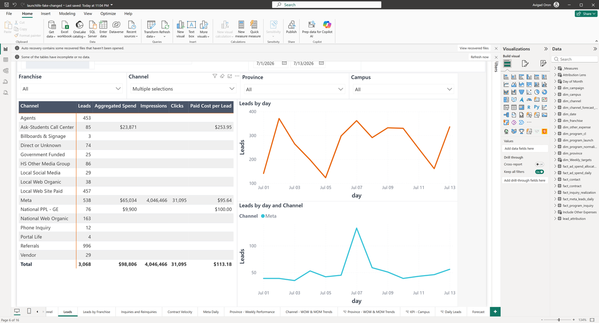</a></figure><figure class="sit" id="sit-leads-regression-3"><h3 class="sit-title">3 · Google Ads re-checked in Channel</h3><div class="ctx">July 1–13, all values selected</div><div class="figs">Leads total <b>3,845</b></div><p class="note">Google Ads restored.</p><a class="shot-link frame" href="assets/screen-c20b07a69752.png" target="_blank" rel="noopener" data-caption="3 · Google Ads re-checked in Channel — July 1–13, all values selected" title="Open the screenshot of Google Ads re-checked in Channel" aria-label="Open the screenshot of Google Ads re-checked in Channel">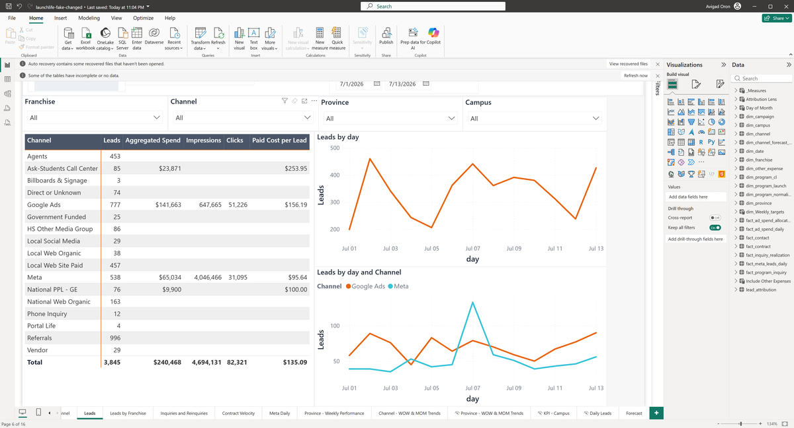</a></figure><figure class="sit" id="sit-leads-regression-4"><h3 class="sit-title">4 · End date changed to July 7</h3><div class="ctx">July 1–7, all values selected</div><div class="figs">Leads total <b>1,959</b></div><p class="note">End date moved to July 7.</p><a class="shot-link frame" href="assets/screen-2bec0f3627dc.png" target="_blank" rel="noopener" data-caption="4 · End date changed to July 7 — July 1–7, all values selected" title="Open the screenshot of End date changed to July 7" aria-label="Open the screenshot of End date changed to July 7">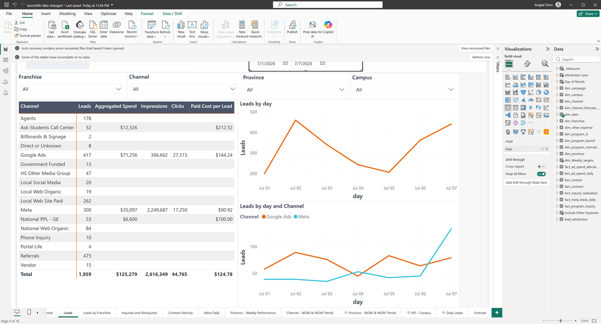</a></figure><figure class="sit" id="sit-leads-regression-5"><h3 class="sit-title">5 · End date changed to July 13</h3><div class="ctx">July 1–13, all values selected</div><div class="figs">Leads total <b>3,845</b></div><p class="note">Date range restored to July 1-13.</p><a class="shot-link frame" href="assets/screen-e329dc1c7012.png" target="_blank" rel="noopener" data-caption="5 · End date changed to July 13 — July 1–13, all values selected" title="Open the screenshot of End date changed to July 13" aria-label="Open the screenshot of End date changed to July 13"></a></figure></div>
<h3>What we observed</h3>
<div class="scroll"><table class="observed"><thead><tr><th>Situation</th><th>Dates</th><th>Filters</th><th class="num">Leads total</th><th>Back to baseline?</th></tr></thead><tbody><tr class="base" data-sit="sit-leads-regression-1"><td><a href="#sit-leads-regression-1">1 · Baseline</a><a class="shot-link icon" href="assets/screen-51ef07fd7299.png" target="_blank" rel="noopener" data-caption="1 · Baseline — July 1–13, all values selected" title="Open the screenshot of Baseline" aria-label="Open the screenshot of Baseline">📷</a></td><td>July 1–13</td><td>all values selected</td><td class="num">3,845</td><td></td></tr><tr class="" data-sit="sit-leads-regression-2"><td><a href="#sit-leads-regression-2">2 · Google Ads unchecked in Channel</a><a class="shot-link icon" href="assets/screen-de4adc9f1560.png" target="_blank" rel="noopener" data-caption="2 · Google Ads unchecked in Channel — July 1–13, Channel: Multiple selections" title="Open the screenshot of Google Ads unchecked in Channel" aria-label="Open the screenshot of Google Ads unchecked in Channel">📷</a></td><td>July 1–13</td><td>Channel: Multiple selections</td><td class="num">3,068<span class="delta">−777 (−20%)</span></td><td></td></tr><tr class="" data-sit="sit-leads-regression-3"><td><a href="#sit-leads-regression-3">3 · Google Ads re-checked in Channel</a><a class="shot-link icon" href="assets/screen-c20b07a69752.png" target="_blank" rel="noopener" data-caption="3 · Google Ads re-checked in Channel — July 1–13, all values selected" title="Open the screenshot of Google Ads re-checked in Channel" aria-label="Open the screenshot of Google Ads re-checked in Channel">📷</a></td><td>July 1–13</td><td>as baseline</td><td class="num">3,845</td><td class="ok">Back to baseline ✓</td></tr><tr class="" data-sit="sit-leads-regression-4"><td><a href="#sit-leads-regression-4">4 · End date changed to July 7</a><a class="shot-link icon" href="assets/screen-2bec0f3627dc.png" target="_blank" rel="noopener" data-caption="4 · End date changed to July 7 — July 1–7, all values selected" title="Open the screenshot of End date changed to July 7" aria-label="Open the screenshot of End date changed to July 7">📷</a></td><td>July 1–7</td><td>as baseline</td><td class="num">1,959<span class="delta">−1,886 (−49%)</span></td><td></td></tr><tr class="" data-sit="sit-leads-regression-5"><td><a href="#sit-leads-regression-5">5 · End date changed to July 13</a><a class="shot-link icon" href="assets/screen-e329dc1c7012.png" target="_blank" rel="noopener" data-caption="5 · End date changed to July 13 — July 1–13, all values selected" title="Open the screenshot of End date changed to July 13" aria-label="Open the screenshot of End date changed to July 13">📷</a></td><td>July 1–13</td><td>as baseline</td><td class="num">3,845</td><td class="ok">Back to baseline ✓</td></tr></tbody></table></div>
<h3>Checks</h3>
<ul class="checks"><li class="pass"><span class="mark">✓</span>Putting the filters back gave the baseline figures again (Google Ads re-checked in Channel).<span class="views"><a class="shot-link" href="assets/screen-51ef07fd7299.png" target="_blank" rel="noopener" data-caption="1 · Baseline — July 1–13, all values selected" title="Open the screenshot of Baseline" aria-label="Open the screenshot of Baseline">view 1</a><a class="shot-link" href="assets/screen-c20b07a69752.png" target="_blank" rel="noopener" data-caption="3 · Google Ads re-checked in Channel — July 1–13, all values selected" title="Open the screenshot of Google Ads re-checked in Channel" aria-label="Open the screenshot of Google Ads re-checked in Channel">view 3</a></span></li><li class="pass"><span class="mark">✓</span>Putting the filters back gave the baseline figures again (End date changed to July 13).<span class="views"><a class="shot-link" href="assets/screen-51ef07fd7299.png" target="_blank" rel="noopener" data-caption="1 · Baseline — July 1–13, all values selected" title="Open the screenshot of Baseline" aria-label="Open the screenshot of Baseline">view 1</a><a class="shot-link" href="assets/screen-e329dc1c7012.png" target="_blank" rel="noopener" data-caption="5 · End date changed to July 13 — July 1–13, all values selected" title="Open the screenshot of End date changed to July 13" aria-label="Open the screenshot of End date changed to July 13">view 5</a></span></li><li class="pass"><span class="mark">✓</span>Google Ads unchecked in Channel changed Leads total (3,845 → 3,068).<span class="views"><a class="shot-link" href="assets/screen-51ef07fd7299.png" target="_blank" rel="noopener" data-caption="1 · Baseline — July 1–13, all values selected" title="Open the screenshot of Baseline" aria-label="Open the screenshot of Baseline">view 1</a><a class="shot-link" href="assets/screen-de4adc9f1560.png" target="_blank" rel="noopener" data-caption="2 · Google Ads unchecked in Channel — July 1–13, Channel: Multiple selections" title="Open the screenshot of Google Ads unchecked in Channel" aria-label="Open the screenshot of Google Ads unchecked in Channel">view 2</a></span></li><li class="pass"><span class="mark">✓</span>Google Ads unchecked in Channel: excluding Google Ads can only remove rows, and no figure moved the other way.<span class="views"><a class="shot-link" href="assets/screen-51ef07fd7299.png" target="_blank" rel="noopener" data-caption="1 · Baseline — July 1–13, all values selected" title="Open the screenshot of Baseline" aria-label="Open the screenshot of Baseline">view 1</a><a class="shot-link" href="assets/screen-de4adc9f1560.png" target="_blank" rel="noopener" data-caption="2 · Google Ads unchecked in Channel — July 1–13, Channel: Multiple selections" title="Open the screenshot of Google Ads unchecked in Channel" aria-label="Open the screenshot of Google Ads unchecked in Channel">view 2</a></span></li><li class="pass"><span class="mark">✓</span>Google Ads re-checked in Channel changed Leads total (3,068 → 3,845).<span class="views"><a class="shot-link" href="assets/screen-de4adc9f1560.png" target="_blank" rel="noopener" data-caption="2 · Google Ads unchecked in Channel — July 1–13, Channel: Multiple selections" title="Open the screenshot of Google Ads unchecked in Channel" aria-label="Open the screenshot of Google Ads unchecked in Channel">view 2</a><a class="shot-link" href="assets/screen-c20b07a69752.png" target="_blank" rel="noopener" data-caption="3 · Google Ads re-checked in Channel — July 1–13, all values selected" title="Open the screenshot of Google Ads re-checked in Channel" aria-label="Open the screenshot of Google Ads re-checked in Channel">view 3</a></span></li><li class="pass"><span class="mark">✓</span>Google Ads re-checked in Channel: putting Google Ads back can only add rows, and no figure moved the other way.<span class="views"><a class="shot-link" href="assets/screen-de4adc9f1560.png" target="_blank" rel="noopener" data-caption="2 · Google Ads unchecked in Channel — July 1–13, Channel: Multiple selections" title="Open the screenshot of Google Ads unchecked in Channel" aria-label="Open the screenshot of Google Ads unchecked in Channel">view 2</a><a class="shot-link" href="assets/screen-c20b07a69752.png" target="_blank" rel="noopener" data-caption="3 · Google Ads re-checked in Channel — July 1–13, all values selected" title="Open the screenshot of Google Ads re-checked in Channel" aria-label="Open the screenshot of Google Ads re-checked in Channel">view 3</a></span></li><li class="pass"><span class="mark">✓</span>End date changed to July 7 changed Leads total (3,845 → 1,959).<span class="views"><a class="shot-link" href="assets/screen-c20b07a69752.png" target="_blank" rel="noopener" data-caption="3 · Google Ads re-checked in Channel — July 1–13, all values selected" title="Open the screenshot of Google Ads re-checked in Channel" aria-label="Open the screenshot of Google Ads re-checked in Channel">view 3</a><a class="shot-link" href="assets/screen-2bec0f3627dc.png" target="_blank" rel="noopener" data-caption="4 · End date changed to July 7 — July 1–7, all values selected" title="Open the screenshot of End date changed to July 7" aria-label="Open the screenshot of End date changed to July 7">view 4</a></span></li><li class="pass"><span class="mark">✓</span>End date changed to July 7: a shorter date range covers fewer days, and no figure moved the other way.<span class="views"><a class="shot-link" href="assets/screen-c20b07a69752.png" target="_blank" rel="noopener" data-caption="3 · Google Ads re-checked in Channel — July 1–13, all values selected" title="Open the screenshot of Google Ads re-checked in Channel" aria-label="Open the screenshot of Google Ads re-checked in Channel">view 3</a><a class="shot-link" href="assets/screen-2bec0f3627dc.png" target="_blank" rel="noopener" data-caption="4 · End date changed to July 7 — July 1–7, all values selected" title="Open the screenshot of End date changed to July 7" aria-label="Open the screenshot of End date changed to July 7">view 4</a></span></li><li class="pass"><span class="mark">✓</span>End date changed to July 13 changed Leads total (1,959 → 3,845).<span class="views"><a class="shot-link" href="assets/screen-2bec0f3627dc.png" target="_blank" rel="noopener" data-caption="4 · End date changed to July 7 — July 1–7, all values selected" title="Open the screenshot of End date changed to July 7" aria-label="Open the screenshot of End date changed to July 7">view 4</a><a class="shot-link" href="assets/screen-e329dc1c7012.png" target="_blank" rel="noopener" data-caption="5 · End date changed to July 13 — July 1–13, all values selected" title="Open the screenshot of End date changed to July 13" aria-label="Open the screenshot of End date changed to July 13">view 5</a></span></li><li class="pass"><span class="mark">✓</span>End date changed to July 13: a longer date range covers more days, and no figure moved the other way.<span class="views"><a class="shot-link" href="assets/screen-2bec0f3627dc.png" target="_blank" rel="noopener" data-caption="4 · End date changed to July 7 — July 1–7, all values selected" title="Open the screenshot of End date changed to July 7" aria-label="Open the screenshot of End date changed to July 7">view 4</a><a class="shot-link" href="assets/screen-e329dc1c7012.png" target="_blank" rel="noopener" data-caption="5 · End date changed to July 13 — July 1–13, all values selected" title="Open the screenshot of End date changed to July 13" aria-label="Open the screenshot of End date changed to July 13">view 5</a></span></li><li class="pass"><span class="mark">✓</span>Every figure we checked matched the figure we calculated ourselves from the data. One figure was compared at the rounded precision the card displays.</li></ul>
<h3>Questions for you</h3>
<ol class="asks"><li class="ok">Nothing looked inconsistent. Do these figures match what you expect for these dates and filters?</li></ol>
<div class="decide"><button type="button" class="sign" data-mode="sign" aria-pressed="false">Sign off</button><button type="button" class="reject" data-mode="reject" aria-pressed="false">Reject</button>
<textarea placeholder="Comment (applies to every expectation of this component unless overridden below)"></textarea><button type="button" class="clear">Clear</button>
<div class="state">No decision recorded for this component.</div></div>
<details class="claims"><summary>Every expectation, with the technical detail (1)</summary><table><thead><tr><th>ID</th><th>Expectation and observation</th><th>Decision</th></tr></thead><tbody><tr data-claim="C-LEADS-TABLE-REGRESSION" data-status="passed"><td>C-LEADS-TABLE-REGRESSION<br><span class="status passed">passed</span></td><td><b>Table total matches [New Inquiries] = 3,845 for Jul 1-13 (was [Leads] = 4,360).</b><p>Table total 3,845 matches the new [New Inquiries] oracle. All interaction states pass.</p><small>Observed implementation, verified controls and current DAX; business approval pending.</small></td><td><select aria-label="Decision for C-LEADS-TABLE-REGRESSION"><option value="">Not reviewed</option><option value="accepted">Accept</option><option value="confirmed_defect">Confirm defect</option><option value="unresolved">Needs clarification</option></select><textarea class="small" rows="2" placeholder="Comment for this expectation only"></textarea></td></tr></tbody></table></details>
</section>
<section class="card" id="comp-inquiries-regression" data-component="inquiries-regression">
<div class="head"><div><h2>Inquiries page (regression)</h2><div class="page">Report page: Inquiries and Reinquiries · 1 of 1 expectations passed</div></div></div>
<h3>What this shows</h3><p class="shows">The Inquiries page table total is unchanged at 4,360 for Jul 1-13. Cross-filtering works as before. The monthly combo chart still does not react to the date slicer (same defect as baseline).</p>
<details class="tech"><summary>Technical definition</summary><p>Channel pivot table on the Inquiries page. Regression replay: all states identical to baseline.</p></details>
<h3>Situations</h3>
<div class="sits"><figure class="sit" id="sit-inquiries-regression-1"><h3 class="sit-title">1 · Baseline</h3><div class="ctx">July 1–13, all values selected</div><div class="figs">Inquiries total <b>4,360</b></div><p class="note">Baseline: Inquiries page, July 1-13 2026, all filters default.</p><a class="shot-link frame" href="assets/screen-5457eedfe81b.png" target="_blank" rel="noopener" data-caption="1 · Baseline — July 1–13, all values selected" title="Open the screenshot of Baseline" aria-label="Open the screenshot of Baseline"></a></figure><figure class="sit" id="sit-inquiries-regression-2"><h3 class="sit-title">2 · Clicked &#x27;Referrals&#x27; in Reinquiries and New Inquiries by Channel</h3><div class="ctx">July 1–13, all values selected</div><div class="figs">Inquiries total <b>996</b></div><p class="note">Clicked Referrals bar on channel chart. Observe cross-highlight vs cross-filter on table, franchise bars, and monthly combo.</p><a class="shot-link frame" href="assets/screen-947d8ad53f8b.png" target="_blank" rel="noopener" data-caption="2 · Clicked &#x27;Referrals&#x27; in Reinquiries and New Inquiries by Channel — July 1–13, all values selected" title="Open the screenshot of Clicked &#x27;Referrals&#x27; in Reinquiries and New Inquiries by Channel" aria-label="Open the screenshot of Clicked &#x27;Referrals&#x27; in Reinquiries and New Inquiries by Channel">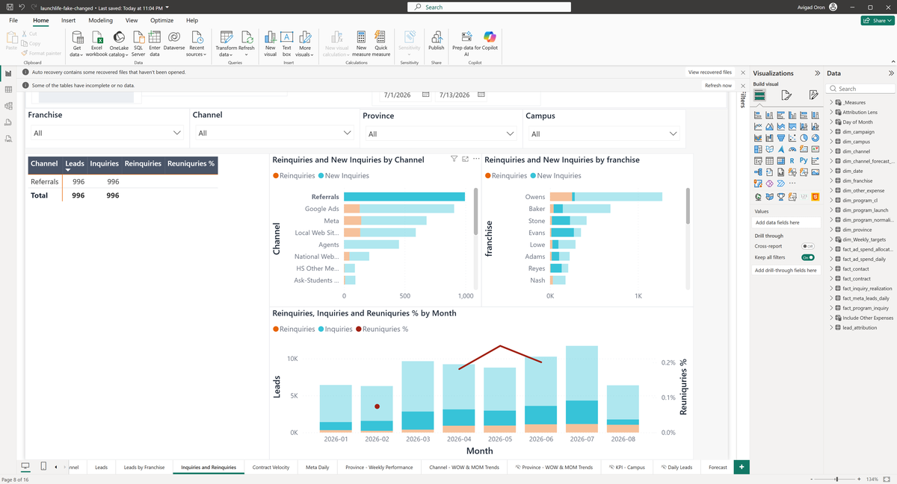</a></figure><figure class="sit" id="sit-inquiries-regression-3"><h3 class="sit-title">3 · Cleared the &#x27;Referrals&#x27; selection in Reinquiries and New Inquiries by Channel</h3><div class="ctx">July 1–13, all values selected</div><div class="figs">Inquiries total <b>4,360</b></div><p class="note">Clicked Referrals bar again to clear selection.</p><a class="shot-link frame" href="assets/screen-70f00e46cc61.png" target="_blank" rel="noopener" data-caption="3 · Cleared the &#x27;Referrals&#x27; selection in Reinquiries and New Inquiries by Channel — July 1–13, all values selected" title="Open the screenshot of Cleared the &#x27;Referrals&#x27; selection in Reinquiries and New Inquiries by Channel" aria-label="Open the screenshot of Cleared the &#x27;Referrals&#x27; selection in Reinquiries and New Inquiries by Channel"></a></figure><figure class="sit" id="sit-inquiries-regression-4"><h3 class="sit-title">4 · End date changed to July 7</h3><div class="ctx">July 1–7, all values selected</div><div class="figs">Inquiries total <b>2,252</b></div><p class="note">End date moved to July 7.</p><a class="shot-link frame" href="assets/screen-dde269a5ed12.png" target="_blank" rel="noopener" data-caption="4 · End date changed to July 7 — July 1–7, all values selected" title="Open the screenshot of End date changed to July 7" aria-label="Open the screenshot of End date changed to July 7">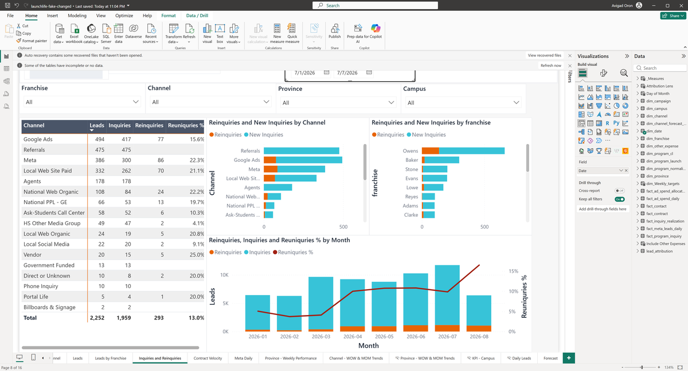</a></figure><figure class="sit" id="sit-inquiries-regression-5"><h3 class="sit-title">5 · End date changed to July 13</h3><div class="ctx">July 1–13, all values selected</div><div class="figs">Inquiries total <b>4,360</b></div><p class="note">Date range restored to July 1-13. Check whether the monthly combo reacted to the date slicer.</p><a class="shot-link frame" href="assets/screen-457069d3a6d7.png" target="_blank" rel="noopener" data-caption="5 · End date changed to July 13 — July 1–13, all values selected" title="Open the screenshot of End date changed to July 13" aria-label="Open the screenshot of End date changed to July 13">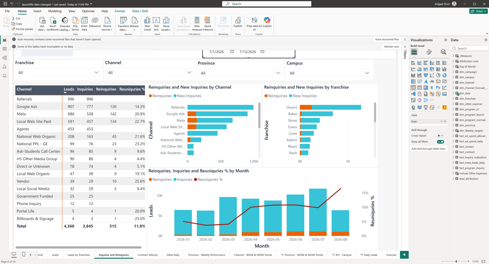</a></figure></div>
<h3>What we observed</h3>
<div class="scroll"><table class="observed"><thead><tr><th>Situation</th><th>Dates</th><th>Filters</th><th class="num">Inquiries total</th><th>Back to baseline?</th></tr></thead><tbody><tr class="base" data-sit="sit-inquiries-regression-1"><td><a href="#sit-inquiries-regression-1">1 · Baseline</a><a class="shot-link icon" href="assets/screen-5457eedfe81b.png" target="_blank" rel="noopener" data-caption="1 · Baseline — July 1–13, all values selected" title="Open the screenshot of Baseline" aria-label="Open the screenshot of Baseline">📷</a></td><td>July 1–13</td><td>all values selected</td><td class="num">4,360</td><td></td></tr><tr class="" data-sit="sit-inquiries-regression-2"><td><a href="#sit-inquiries-regression-2">2 · Clicked &#x27;Referrals&#x27; in Reinquiries and New Inquiries by Channel</a><a class="shot-link icon" href="assets/screen-947d8ad53f8b.png" target="_blank" rel="noopener" data-caption="2 · Clicked &#x27;Referrals&#x27; in Reinquiries and New Inquiries by Channel — July 1–13, all values selected" title="Open the screenshot of Clicked &#x27;Referrals&#x27; in Reinquiries and New Inquiries by Channel" aria-label="Open the screenshot of Clicked &#x27;Referrals&#x27; in Reinquiries and New Inquiries by Channel">📷</a></td><td>July 1–13</td><td>as baseline</td><td class="num">996<span class="delta">−3,364 (−77%)</span></td><td></td></tr><tr class="" data-sit="sit-inquiries-regression-3"><td><a href="#sit-inquiries-regression-3">3 · Cleared the &#x27;Referrals&#x27; selection in Reinquiries and New Inquiries by Channel</a><a class="shot-link icon" href="assets/screen-70f00e46cc61.png" target="_blank" rel="noopener" data-caption="3 · Cleared the &#x27;Referrals&#x27; selection in Reinquiries and New Inquiries by Channel — July 1–13, all values selected" title="Open the screenshot of Cleared the &#x27;Referrals&#x27; selection in Reinquiries and New Inquiries by Channel" aria-label="Open the screenshot of Cleared the &#x27;Referrals&#x27; selection in Reinquiries and New Inquiries by Channel">📷</a></td><td>July 1–13</td><td>as baseline</td><td class="num">4,360</td><td class="ok">Back to baseline ✓</td></tr><tr class="" data-sit="sit-inquiries-regression-4"><td><a href="#sit-inquiries-regression-4">4 · End date changed to July 7</a><a class="shot-link icon" href="assets/screen-dde269a5ed12.png" target="_blank" rel="noopener" data-caption="4 · End date changed to July 7 — July 1–7, all values selected" title="Open the screenshot of End date changed to July 7" aria-label="Open the screenshot of End date changed to July 7">📷</a></td><td>July 1–7</td><td>as baseline</td><td class="num">2,252<span class="delta">−2,108 (−48%)</span></td><td></td></tr><tr class="" data-sit="sit-inquiries-regression-5"><td><a href="#sit-inquiries-regression-5">5 · End date changed to July 13</a><a class="shot-link icon" href="assets/screen-457069d3a6d7.png" target="_blank" rel="noopener" data-caption="5 · End date changed to July 13 — July 1–13, all values selected" title="Open the screenshot of End date changed to July 13" aria-label="Open the screenshot of End date changed to July 13">📷</a></td><td>July 1–13</td><td>as baseline</td><td class="num">4,360</td><td class="ok">Back to baseline ✓</td></tr></tbody></table></div>
<h3>Checks</h3>
<ul class="checks"><li class="pass"><span class="mark">✓</span>Putting the filters back gave the baseline figures again (Cleared the &#x27;Referrals&#x27; selection in Reinquiries and New Inquiries by Channel).<span class="views"><a class="shot-link" href="assets/screen-5457eedfe81b.png" target="_blank" rel="noopener" data-caption="1 · Baseline — July 1–13, all values selected" title="Open the screenshot of Baseline" aria-label="Open the screenshot of Baseline">view 1</a><a class="shot-link" href="assets/screen-70f00e46cc61.png" target="_blank" rel="noopener" data-caption="3 · Cleared the &#x27;Referrals&#x27; selection in Reinquiries and New Inquiries by Channel — July 1–13, all values selected" title="Open the screenshot of Cleared the &#x27;Referrals&#x27; selection in Reinquiries and New Inquiries by Channel" aria-label="Open the screenshot of Cleared the &#x27;Referrals&#x27; selection in Reinquiries and New Inquiries by Channel">view 3</a></span></li><li class="pass"><span class="mark">✓</span>Putting the filters back gave the baseline figures again (End date changed to July 13).<span class="views"><a class="shot-link" href="assets/screen-5457eedfe81b.png" target="_blank" rel="noopener" data-caption="1 · Baseline — July 1–13, all values selected" title="Open the screenshot of Baseline" aria-label="Open the screenshot of Baseline">view 1</a><a class="shot-link" href="assets/screen-457069d3a6d7.png" target="_blank" rel="noopener" data-caption="5 · End date changed to July 13 — July 1–13, all values selected" title="Open the screenshot of End date changed to July 13" aria-label="Open the screenshot of End date changed to July 13">view 5</a></span></li><li class="pass"><span class="mark">✓</span>Clicked &#x27;Referrals&#x27; in Reinquiries and New Inquiries by Channel changed Inquiries total (4,360 → 996).<span class="views"><a class="shot-link" href="assets/screen-5457eedfe81b.png" target="_blank" rel="noopener" data-caption="1 · Baseline — July 1–13, all values selected" title="Open the screenshot of Baseline" aria-label="Open the screenshot of Baseline">view 1</a><a class="shot-link" href="assets/screen-947d8ad53f8b.png" target="_blank" rel="noopener" data-caption="2 · Clicked &#x27;Referrals&#x27; in Reinquiries and New Inquiries by Channel — July 1–13, all values selected" title="Open the screenshot of Clicked &#x27;Referrals&#x27; in Reinquiries and New Inquiries by Channel" aria-label="Open the screenshot of Clicked &#x27;Referrals&#x27; in Reinquiries and New Inquiries by Channel">view 2</a></span></li><li class="pass"><span class="mark">✓</span>Cleared the &#x27;Referrals&#x27; selection in Reinquiries and New Inquiries by Channel changed Inquiries total (996 → 4,360).<span class="views"><a class="shot-link" href="assets/screen-947d8ad53f8b.png" target="_blank" rel="noopener" data-caption="2 · Clicked &#x27;Referrals&#x27; in Reinquiries and New Inquiries by Channel — July 1–13, all values selected" title="Open the screenshot of Clicked &#x27;Referrals&#x27; in Reinquiries and New Inquiries by Channel" aria-label="Open the screenshot of Clicked &#x27;Referrals&#x27; in Reinquiries and New Inquiries by Channel">view 2</a><a class="shot-link" href="assets/screen-70f00e46cc61.png" target="_blank" rel="noopener" data-caption="3 · Cleared the &#x27;Referrals&#x27; selection in Reinquiries and New Inquiries by Channel — July 1–13, all values selected" title="Open the screenshot of Cleared the &#x27;Referrals&#x27; selection in Reinquiries and New Inquiries by Channel" aria-label="Open the screenshot of Cleared the &#x27;Referrals&#x27; selection in Reinquiries and New Inquiries by Channel">view 3</a></span></li><li class="pass"><span class="mark">✓</span>End date changed to July 7 changed Inquiries total (4,360 → 2,252).<span class="views"><a class="shot-link" href="assets/screen-70f00e46cc61.png" target="_blank" rel="noopener" data-caption="3 · Cleared the &#x27;Referrals&#x27; selection in Reinquiries and New Inquiries by Channel — July 1–13, all values selected" title="Open the screenshot of Cleared the &#x27;Referrals&#x27; selection in Reinquiries and New Inquiries by Channel" aria-label="Open the screenshot of Cleared the &#x27;Referrals&#x27; selection in Reinquiries and New Inquiries by Channel">view 3</a><a class="shot-link" href="assets/screen-dde269a5ed12.png" target="_blank" rel="noopener" data-caption="4 · End date changed to July 7 — July 1–7, all values selected" title="Open the screenshot of End date changed to July 7" aria-label="Open the screenshot of End date changed to July 7">view 4</a></span></li><li class="pass"><span class="mark">✓</span>End date changed to July 7: a shorter date range covers fewer days, and no figure moved the other way.<span class="views"><a class="shot-link" href="assets/screen-70f00e46cc61.png" target="_blank" rel="noopener" data-caption="3 · Cleared the &#x27;Referrals&#x27; selection in Reinquiries and New Inquiries by Channel — July 1–13, all values selected" title="Open the screenshot of Cleared the &#x27;Referrals&#x27; selection in Reinquiries and New Inquiries by Channel" aria-label="Open the screenshot of Cleared the &#x27;Referrals&#x27; selection in Reinquiries and New Inquiries by Channel">view 3</a><a class="shot-link" href="assets/screen-dde269a5ed12.png" target="_blank" rel="noopener" data-caption="4 · End date changed to July 7 — July 1–7, all values selected" title="Open the screenshot of End date changed to July 7" aria-label="Open the screenshot of End date changed to July 7">view 4</a></span></li><li class="pass"><span class="mark">✓</span>End date changed to July 13 changed Inquiries total (2,252 → 4,360).<span class="views"><a class="shot-link" href="assets/screen-dde269a5ed12.png" target="_blank" rel="noopener" data-caption="4 · End date changed to July 7 — July 1–7, all values selected" title="Open the screenshot of End date changed to July 7" aria-label="Open the screenshot of End date changed to July 7">view 4</a><a class="shot-link" href="assets/screen-457069d3a6d7.png" target="_blank" rel="noopener" data-caption="5 · End date changed to July 13 — July 1–13, all values selected" title="Open the screenshot of End date changed to July 13" aria-label="Open the screenshot of End date changed to July 13">view 5</a></span></li><li class="pass"><span class="mark">✓</span>End date changed to July 13: a longer date range covers more days, and no figure moved the other way.<span class="views"><a class="shot-link" href="assets/screen-dde269a5ed12.png" target="_blank" rel="noopener" data-caption="4 · End date changed to July 7 — July 1–7, all values selected" title="Open the screenshot of End date changed to July 7" aria-label="Open the screenshot of End date changed to July 7">view 4</a><a class="shot-link" href="assets/screen-457069d3a6d7.png" target="_blank" rel="noopener" data-caption="5 · End date changed to July 13 — July 1–13, all values selected" title="Open the screenshot of End date changed to July 13" aria-label="Open the screenshot of End date changed to July 13">view 5</a></span></li><li class="pass"><span class="mark">✓</span>Every figure we checked matched the figure we calculated ourselves from the data. One figure was compared at the rounded precision the card displays.</li></ul>
<h3>Questions for you</h3>
<ol class="asks"><li class="ok">Nothing looked inconsistent. Do these figures match what you expect for these dates and filters?</li></ol>
<div class="decide"><button type="button" class="sign" data-mode="sign" aria-pressed="false">Sign off</button><button type="button" class="reject" data-mode="reject" aria-pressed="false">Reject</button>
<textarea placeholder="Comment (applies to every expectation of this component unless overridden below)"></textarea><button type="button" class="clear">Clear</button>
<div class="state">No decision recorded for this component.</div></div>
<details class="claims"><summary>Every expectation, with the technical detail (1)</summary><table><thead><tr><th>ID</th><th>Expectation and observation</th><th>Decision</th></tr></thead><tbody><tr data-claim="R-INQ-TABLE" data-status="passed"><td>R-INQ-TABLE<br><span class="status passed">passed</span></td><td><b>Channel table total = 4,360 for July 1-13.</b><p>Table total 4,360. Preserved.</p><small>Observed implementation, verified controls and current DAX; business approval pending.</small></td><td><select aria-label="Decision for R-INQ-TABLE"><option value="">Not reviewed</option><option value="accepted">Accept</option><option value="confirmed_defect">Confirm defect</option><option value="unresolved">Needs clarification</option></select><textarea class="small" rows="2" placeholder="Comment for this expectation only"></textarea></td></tr></tbody></table></details>
</section>
<section class="card" id="comp-velocity-regression" data-component="velocity-regression">
<div class="head"><div><h2>Contract Velocity page (regression)</h2><div class="page">Report page: Contract Velocity · 1 of 1 expectations passed</div></div></div>
<h3>What this shows</h3><p class="shows">Contract velocity cards are unchanged: Starts=48, Median=12, P75=26 for Jul 1-13 with 3-channel selection. All interaction states match baseline exactly.</p>
<details class="tech"><summary>Technical definition</summary><p>Starts/Median/P75 cards and channel table. Regression replay: all states identical to baseline.</p></details>
<h3>Situations</h3>
<div class="sits"><figure class="sit" id="sit-velocity-regression-1"><h3 class="sit-title">1 · Baseline</h3><div class="ctx">July 1–13, Channel: Multiple selections</div><div class="figs">Starts <b>48</b> · Median Days to Contract <b>12</b> · P75 Days to Contract <b>26</b> · Velocity total <b>48</b></div><p class="note">Baseline: Contract Velocity, July 1-13 2026. The Channel slicer has a saved selection of Google Ads, Meta, Ask-Students Call Center.</p><a class="shot-link frame" href="assets/screen-1b0c04cb0f6e.png" target="_blank" rel="noopener" data-caption="1 · Baseline — July 1–13, Channel: Multiple selections" title="Open the screenshot of Baseline" aria-label="Open the screenshot of Baseline">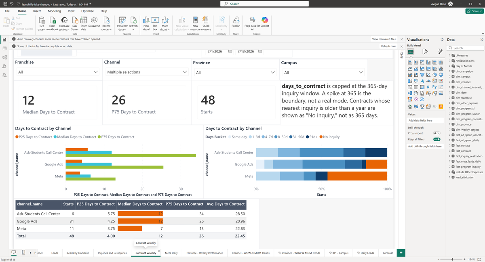</a></figure><figure class="sit" id="sit-velocity-regression-2"><h3 class="sit-title">2 · Google Ads unchecked in Channel</h3><div class="ctx">July 1–13, Channel: Multiple selections</div><div class="figs">Starts <b>17</b> · Median Days to Contract <b>9</b> · P75 Days to Contract <b>22</b> · Velocity total <b>17</b></div><p class="note">Unchecked Google Ads from channel slicer.</p><a class="shot-link frame" href="assets/screen-ed23802565fc.png" target="_blank" rel="noopener" data-caption="2 · Google Ads unchecked in Channel — July 1–13, Channel: Multiple selections" title="Open the screenshot of Google Ads unchecked in Channel" aria-label="Open the screenshot of Google Ads unchecked in Channel">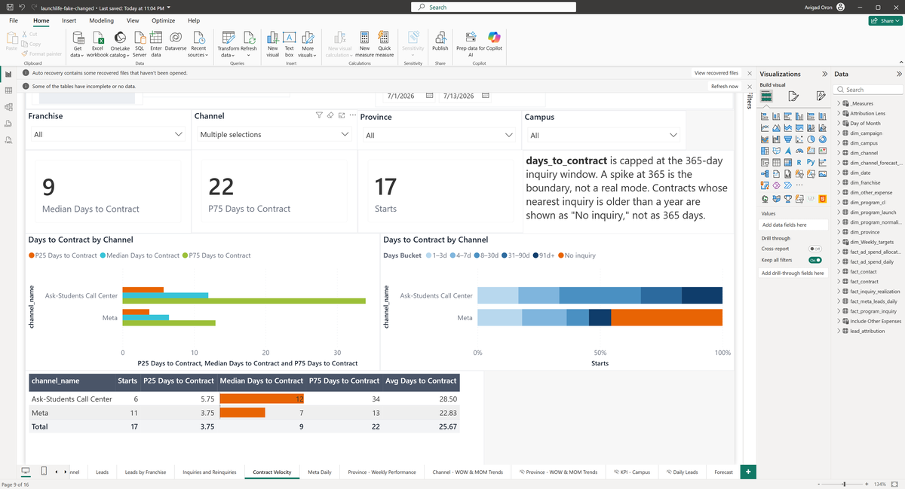</a></figure><figure class="sit" id="sit-velocity-regression-3"><h3 class="sit-title">3 · Google Ads re-checked in Channel</h3><div class="ctx">July 1–13, Channel: Multiple selections</div><div class="figs">Starts <b>48</b> · Median Days to Contract <b>12</b> · P75 Days to Contract <b>26</b> · Velocity total <b>48</b></div><p class="note">Restored Google Ads in channel slicer.</p><a class="shot-link frame" href="assets/screen-3c984e73e95e.png" target="_blank" rel="noopener" data-caption="3 · Google Ads re-checked in Channel — July 1–13, Channel: Multiple selections" title="Open the screenshot of Google Ads re-checked in Channel" aria-label="Open the screenshot of Google Ads re-checked in Channel"></a></figure><figure class="sit" id="sit-velocity-regression-4"><h3 class="sit-title">4 · Dates changed to July 1–31</h3><div class="ctx">July 1–31, Channel: Multiple selections</div><div class="figs">Starts <b>183</b> · Median Days to Contract <b>12</b> · P75 Days to Contract <b>37</b> · Velocity total <b>183</b></div><p class="note">Date range extended to July 1-31.</p><a class="shot-link frame" href="assets/screen-4f3426243254.png" target="_blank" rel="noopener" data-caption="4 · Dates changed to July 1–31 — July 1–31, Channel: Multiple selections" title="Open the screenshot of Dates changed to July 1–31" aria-label="Open the screenshot of Dates changed to July 1–31">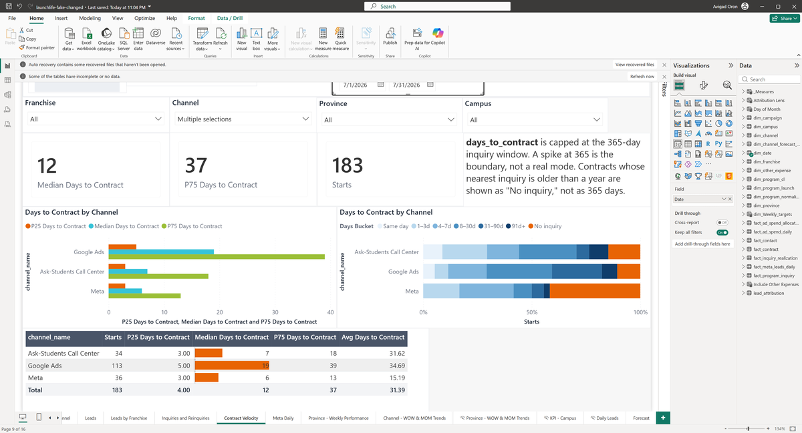</a></figure><figure class="sit" id="sit-velocity-regression-5"><h3 class="sit-title">5 · Dates changed to July 1–13</h3><div class="ctx">July 1–13, Channel: Multiple selections</div><div class="figs">Starts <b>48</b> · Median Days to Contract <b>12</b> · P75 Days to Contract <b>26</b> · Velocity total <b>48</b></div><p class="note">Date range restored to July 1-13.</p><a class="shot-link frame" href="assets/screen-675f3bc0a7e2.png" target="_blank" rel="noopener" data-caption="5 · Dates changed to July 1–13 — July 1–13, Channel: Multiple selections" title="Open the screenshot of Dates changed to July 1–13" aria-label="Open the screenshot of Dates changed to July 1–13"></a></figure></div>
<h3>What we observed</h3>
<div class="scroll"><table class="observed"><thead><tr><th>Situation</th><th>Dates</th><th>Filters</th><th class="num">Starts</th><th class="num">Median Days to Contract</th><th class="num">P75 Days to Contract</th><th class="num">Velocity total</th><th>Back to baseline?</th></tr></thead><tbody><tr class="base" data-sit="sit-velocity-regression-1"><td><a href="#sit-velocity-regression-1">1 · Baseline</a><a class="shot-link icon" href="assets/screen-1b0c04cb0f6e.png" target="_blank" rel="noopener" data-caption="1 · Baseline — July 1–13, Channel: Multiple selections" title="Open the screenshot of Baseline" aria-label="Open the screenshot of Baseline">📷</a></td><td>July 1–13</td><td>Channel: Multiple selections</td><td class="num">48</td><td class="num">12</td><td class="num">26</td><td class="num">48</td><td></td></tr><tr class="" data-sit="sit-velocity-regression-2"><td><a href="#sit-velocity-regression-2">2 · Google Ads unchecked in Channel</a><a class="shot-link icon" href="assets/screen-ed23802565fc.png" target="_blank" rel="noopener" data-caption="2 · Google Ads unchecked in Channel — July 1–13, Channel: Multiple selections" title="Open the screenshot of Google Ads unchecked in Channel" aria-label="Open the screenshot of Google Ads unchecked in Channel">📷</a></td><td>July 1–13</td><td>as baseline</td><td class="num">17<span class="delta">−31 (−65%)</span></td><td class="num">9<span class="delta">−3 (−25%)</span></td><td class="num">22<span class="delta">−4 (−15%)</span></td><td class="num">17<span class="delta">−31 (−65%)</span></td><td></td></tr><tr class="" data-sit="sit-velocity-regression-3"><td><a href="#sit-velocity-regression-3">3 · Google Ads re-checked in Channel</a><a class="shot-link icon" href="assets/screen-3c984e73e95e.png" target="_blank" rel="noopener" data-caption="3 · Google Ads re-checked in Channel — July 1–13, Channel: Multiple selections" title="Open the screenshot of Google Ads re-checked in Channel" aria-label="Open the screenshot of Google Ads re-checked in Channel">📷</a></td><td>July 1–13</td><td>as baseline</td><td class="num">48</td><td class="num">12</td><td class="num">26</td><td class="num">48</td><td class="ok">Back to baseline ✓</td></tr><tr class="" data-sit="sit-velocity-regression-4"><td><a href="#sit-velocity-regression-4">4 · Dates changed to July 1–31</a><a class="shot-link icon" href="assets/screen-4f3426243254.png" target="_blank" rel="noopener" data-caption="4 · Dates changed to July 1–31 — July 1–31, Channel: Multiple selections" title="Open the screenshot of Dates changed to July 1–31" aria-label="Open the screenshot of Dates changed to July 1–31">📷</a></td><td>July 1–31</td><td>as baseline</td><td class="num">183<span class="delta">+135 (+281%)</span></td><td class="num">12</td><td class="num">37<span class="delta">+11 (+42%)</span></td><td class="num">183<span class="delta">+135 (+281%)</span></td><td></td></tr><tr class="" data-sit="sit-velocity-regression-5"><td><a href="#sit-velocity-regression-5">5 · Dates changed to July 1–13</a><a class="shot-link icon" href="assets/screen-675f3bc0a7e2.png" target="_blank" rel="noopener" data-caption="5 · Dates changed to July 1–13 — July 1–13, Channel: Multiple selections" title="Open the screenshot of Dates changed to July 1–13" aria-label="Open the screenshot of Dates changed to July 1–13">📷</a></td><td>July 1–13</td><td>as baseline</td><td class="num">48</td><td class="num">12</td><td class="num">26</td><td class="num">48</td><td class="ok">Back to baseline ✓</td></tr></tbody></table></div>
<h3>Checks</h3>
<ul class="checks"><li class="pass"><span class="mark">✓</span>Putting the filters back gave the baseline figures again (Google Ads re-checked in Channel).<span class="views"><a class="shot-link" href="assets/screen-1b0c04cb0f6e.png" target="_blank" rel="noopener" data-caption="1 · Baseline — July 1–13, Channel: Multiple selections" title="Open the screenshot of Baseline" aria-label="Open the screenshot of Baseline">view 1</a><a class="shot-link" href="assets/screen-3c984e73e95e.png" target="_blank" rel="noopener" data-caption="3 · Google Ads re-checked in Channel — July 1–13, Channel: Multiple selections" title="Open the screenshot of Google Ads re-checked in Channel" aria-label="Open the screenshot of Google Ads re-checked in Channel">view 3</a></span></li><li class="pass"><span class="mark">✓</span>Putting the filters back gave the baseline figures again (Dates changed to July 1–13).<span class="views"><a class="shot-link" href="assets/screen-1b0c04cb0f6e.png" target="_blank" rel="noopener" data-caption="1 · Baseline — July 1–13, Channel: Multiple selections" title="Open the screenshot of Baseline" aria-label="Open the screenshot of Baseline">view 1</a><a class="shot-link" href="assets/screen-675f3bc0a7e2.png" target="_blank" rel="noopener" data-caption="5 · Dates changed to July 1–13 — July 1–13, Channel: Multiple selections" title="Open the screenshot of Dates changed to July 1–13" aria-label="Open the screenshot of Dates changed to July 1–13">view 5</a></span></li><li class="pass"><span class="mark">✓</span>Google Ads unchecked in Channel changed Starts (48 → 17), Median Days to Contract (12 → 9), P75 Days to Contract (26 → 22) and Velocity total (48 → 17).<span class="views"><a class="shot-link" href="assets/screen-1b0c04cb0f6e.png" target="_blank" rel="noopener" data-caption="1 · Baseline — July 1–13, Channel: Multiple selections" title="Open the screenshot of Baseline" aria-label="Open the screenshot of Baseline">view 1</a><a class="shot-link" href="assets/screen-ed23802565fc.png" target="_blank" rel="noopener" data-caption="2 · Google Ads unchecked in Channel — July 1–13, Channel: Multiple selections" title="Open the screenshot of Google Ads unchecked in Channel" aria-label="Open the screenshot of Google Ads unchecked in Channel">view 2</a></span></li><li class="pass"><span class="mark">✓</span>Google Ads unchecked in Channel: excluding Google Ads can only remove rows, and no figure moved the other way.<span class="views"><a class="shot-link" href="assets/screen-1b0c04cb0f6e.png" target="_blank" rel="noopener" data-caption="1 · Baseline — July 1–13, Channel: Multiple selections" title="Open the screenshot of Baseline" aria-label="Open the screenshot of Baseline">view 1</a><a class="shot-link" href="assets/screen-ed23802565fc.png" target="_blank" rel="noopener" data-caption="2 · Google Ads unchecked in Channel — July 1–13, Channel: Multiple selections" title="Open the screenshot of Google Ads unchecked in Channel" aria-label="Open the screenshot of Google Ads unchecked in Channel">view 2</a></span></li><li class="pass"><span class="mark">✓</span>Google Ads re-checked in Channel changed Starts (17 → 48), Median Days to Contract (9 → 12), P75 Days to Contract (22 → 26) and Velocity total (17 → 48).<span class="views"><a class="shot-link" href="assets/screen-ed23802565fc.png" target="_blank" rel="noopener" data-caption="2 · Google Ads unchecked in Channel — July 1–13, Channel: Multiple selections" title="Open the screenshot of Google Ads unchecked in Channel" aria-label="Open the screenshot of Google Ads unchecked in Channel">view 2</a><a class="shot-link" href="assets/screen-3c984e73e95e.png" target="_blank" rel="noopener" data-caption="3 · Google Ads re-checked in Channel — July 1–13, Channel: Multiple selections" title="Open the screenshot of Google Ads re-checked in Channel" aria-label="Open the screenshot of Google Ads re-checked in Channel">view 3</a></span></li><li class="pass"><span class="mark">✓</span>Google Ads re-checked in Channel: putting Google Ads back can only add rows, and no figure moved the other way.<span class="views"><a class="shot-link" href="assets/screen-ed23802565fc.png" target="_blank" rel="noopener" data-caption="2 · Google Ads unchecked in Channel — July 1–13, Channel: Multiple selections" title="Open the screenshot of Google Ads unchecked in Channel" aria-label="Open the screenshot of Google Ads unchecked in Channel">view 2</a><a class="shot-link" href="assets/screen-3c984e73e95e.png" target="_blank" rel="noopener" data-caption="3 · Google Ads re-checked in Channel — July 1–13, Channel: Multiple selections" title="Open the screenshot of Google Ads re-checked in Channel" aria-label="Open the screenshot of Google Ads re-checked in Channel">view 3</a></span></li><li class="pass"><span class="mark">✓</span>Dates changed to July 1–31 changed Starts (48 → 183), P75 Days to Contract (26 → 37) and Velocity total (48 → 183).<span class="views"><a class="shot-link" href="assets/screen-3c984e73e95e.png" target="_blank" rel="noopener" data-caption="3 · Google Ads re-checked in Channel — July 1–13, Channel: Multiple selections" title="Open the screenshot of Google Ads re-checked in Channel" aria-label="Open the screenshot of Google Ads re-checked in Channel">view 3</a><a class="shot-link" href="assets/screen-4f3426243254.png" target="_blank" rel="noopener" data-caption="4 · Dates changed to July 1–31 — July 1–31, Channel: Multiple selections" title="Open the screenshot of Dates changed to July 1–31" aria-label="Open the screenshot of Dates changed to July 1–31">view 4</a></span></li><li class="pass"><span class="mark">✓</span>Dates changed to July 1–31: a longer date range covers more days, and no figure moved the other way.<span class="views"><a class="shot-link" href="assets/screen-3c984e73e95e.png" target="_blank" rel="noopener" data-caption="3 · Google Ads re-checked in Channel — July 1–13, Channel: Multiple selections" title="Open the screenshot of Google Ads re-checked in Channel" aria-label="Open the screenshot of Google Ads re-checked in Channel">view 3</a><a class="shot-link" href="assets/screen-4f3426243254.png" target="_blank" rel="noopener" data-caption="4 · Dates changed to July 1–31 — July 1–31, Channel: Multiple selections" title="Open the screenshot of Dates changed to July 1–31" aria-label="Open the screenshot of Dates changed to July 1–31">view 4</a></span></li><li class="pass"><span class="mark">✓</span>Dates changed to July 1–13 changed Starts (183 → 48), P75 Days to Contract (37 → 26) and Velocity total (183 → 48).<span class="views"><a class="shot-link" href="assets/screen-4f3426243254.png" target="_blank" rel="noopener" data-caption="4 · Dates changed to July 1–31 — July 1–31, Channel: Multiple selections" title="Open the screenshot of Dates changed to July 1–31" aria-label="Open the screenshot of Dates changed to July 1–31">view 4</a><a class="shot-link" href="assets/screen-675f3bc0a7e2.png" target="_blank" rel="noopener" data-caption="5 · Dates changed to July 1–13 — July 1–13, Channel: Multiple selections" title="Open the screenshot of Dates changed to July 1–13" aria-label="Open the screenshot of Dates changed to July 1–13">view 5</a></span></li><li class="pass"><span class="mark">✓</span>Dates changed to July 1–13: a shorter date range covers fewer days, and no figure moved the other way.<span class="views"><a class="shot-link" href="assets/screen-4f3426243254.png" target="_blank" rel="noopener" data-caption="4 · Dates changed to July 1–31 — July 1–31, Channel: Multiple selections" title="Open the screenshot of Dates changed to July 1–31" aria-label="Open the screenshot of Dates changed to July 1–31">view 4</a><a class="shot-link" href="assets/screen-675f3bc0a7e2.png" target="_blank" rel="noopener" data-caption="5 · Dates changed to July 1–13 — July 1–13, Channel: Multiple selections" title="Open the screenshot of Dates changed to July 1–13" aria-label="Open the screenshot of Dates changed to July 1–13">view 5</a></span></li><li class="pass"><span class="mark">✓</span>Every figure we checked matched the figure we calculated ourselves from the data. One figure was compared at the rounded precision the card displays.</li></ul>
<h3>Questions for you</h3>
<ol class="asks"><li class="ok">Nothing looked inconsistent. Do these figures match what you expect for these dates and filters?</li></ol>
<div class="decide"><button type="button" class="sign" data-mode="sign" aria-pressed="false">Sign off</button><button type="button" class="reject" data-mode="reject" aria-pressed="false">Reject</button>
<textarea placeholder="Comment (applies to every expectation of this component unless overridden below)"></textarea><button type="button" class="clear">Clear</button>
<div class="state">No decision recorded for this component.</div></div>
<details class="claims"><summary>Every expectation, with the technical detail (1)</summary><table><thead><tr><th>ID</th><th>Expectation and observation</th><th>Decision</th></tr></thead><tbody><tr data-claim="R-VEL-CARDS" data-status="passed"><td>R-VEL-CARDS<br><span class="status passed">passed</span></td><td><b>Starts=48, Median=12, P75=26 for July 1-13.</b><p>All match. Preserved.</p><small>Observed implementation, verified controls and current DAX; business approval pending.</small></td><td><select aria-label="Decision for R-VEL-CARDS"><option value="">Not reviewed</option><option value="accepted">Accept</option><option value="confirmed_defect">Confirm defect</option><option value="unresolved">Needs clarification</option></select><textarea class="small" rows="2" placeholder="Comment for this expectation only"></textarea></td></tr></tbody></table></details>
</section>
<section class="card" id="comp-meta_daily-regression" data-component="meta_daily-regression">
<div class="head"><div><h2>Meta Daily page (regression)</h2><div class="page">Report page: Meta Daily · 1 of 1 expectations passed</div></div></div>
<h3>What this shows</h3><p class="shows">Meta Daily page data is unchanged across all tested date ranges: Jul 1-13 (834), Jul 7 (60), Aug 1-13 (713), restored (834).</p>
<details class="tech"><summary>Technical definition</summary><p>Platform leads table with date-range controls. Regression replay: all states identical to baseline.</p></details>
<h3>Situations</h3>
<div class="sits"><figure class="sit" id="sit-meta_daily-regression-1"><h3 class="sit-title">1 · Baseline</h3><div class="ctx">July 1–13</div><div class="figs">Meta total <b>834</b></div><p class="note">Baseline: Meta Daily page, July 1-13 2026.</p><a class="shot-link frame" href="assets/screen-942f0ada2a57.png" target="_blank" rel="noopener" data-caption="1 · Baseline — July 1–13" title="Open the screenshot of Baseline" aria-label="Open the screenshot of Baseline">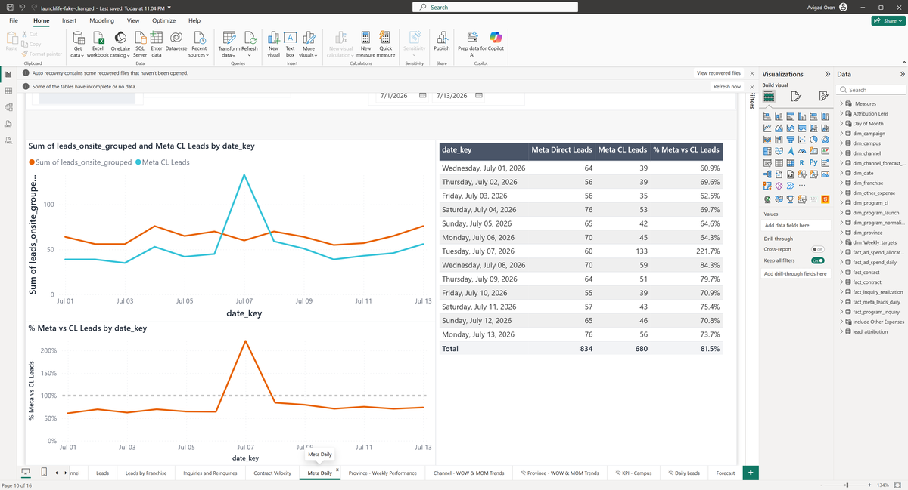</a></figure><figure class="sit" id="sit-meta_daily-regression-2"><h3 class="sit-title">2 · Dates changed to July 7</h3><div class="ctx">July 7</div><div class="figs">Meta total <b>60</b></div><p class="note">Single day July 7.</p><a class="shot-link frame" href="assets/screen-af00ef533dbe.png" target="_blank" rel="noopener" data-caption="2 · Dates changed to July 7 — July 7" title="Open the screenshot of Dates changed to July 7" aria-label="Open the screenshot of Dates changed to July 7">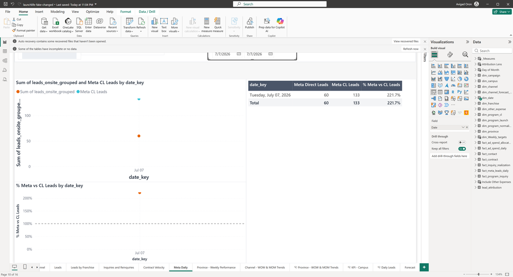</a></figure><figure class="sit" id="sit-meta_daily-regression-3"><h3 class="sit-title">3 · Dates changed to August 1–13</h3><div class="ctx">August 1–13</div><div class="figs">Meta total <b>713</b></div><p class="note">August 1-13 2026.</p><a class="shot-link frame" href="assets/screen-56c4f9c9fb0a.png" target="_blank" rel="noopener" data-caption="3 · Dates changed to August 1–13 — August 1–13" title="Open the screenshot of Dates changed to August 1–13" aria-label="Open the screenshot of Dates changed to August 1–13">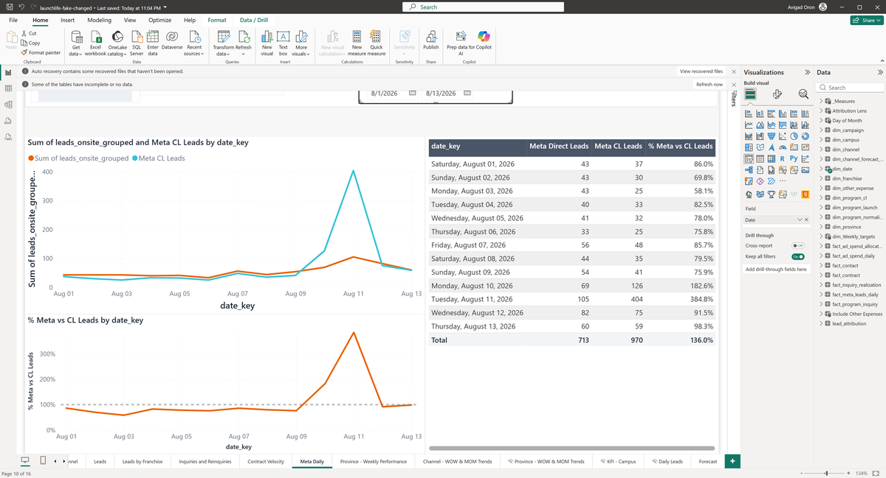</a></figure><figure class="sit" id="sit-meta_daily-regression-4"><h3 class="sit-title">4 · Dates changed to July 1–13</h3><div class="ctx">July 1–13</div><div class="figs">Meta total <b>834</b></div><p class="note">Restored to July 1-13.</p><a class="shot-link frame" href="assets/screen-a2a98c4058cd.png" target="_blank" rel="noopener" data-caption="4 · Dates changed to July 1–13 — July 1–13" title="Open the screenshot of Dates changed to July 1–13" aria-label="Open the screenshot of Dates changed to July 1–13">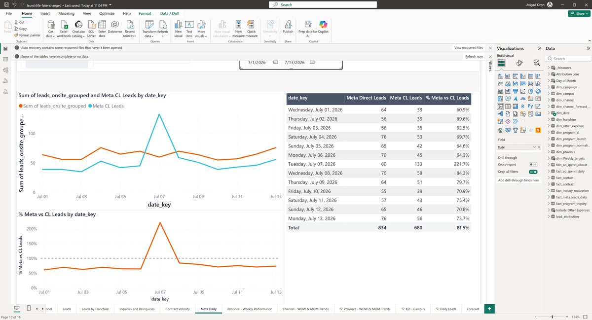</a></figure></div>
<h3>What we observed</h3>
<div class="scroll"><table class="observed"><thead><tr><th>Situation</th><th>Dates</th><th>Filters</th><th class="num">Meta total</th><th>Back to baseline?</th></tr></thead><tbody><tr class="base" data-sit="sit-meta_daily-regression-1"><td><a href="#sit-meta_daily-regression-1">1 · Baseline</a><a class="shot-link icon" href="assets/screen-942f0ada2a57.png" target="_blank" rel="noopener" data-caption="1 · Baseline — July 1–13" title="Open the screenshot of Baseline" aria-label="Open the screenshot of Baseline">📷</a></td><td>July 1–13</td><td>as captured</td><td class="num">834</td><td></td></tr><tr class="" data-sit="sit-meta_daily-regression-2"><td><a href="#sit-meta_daily-regression-2">2 · Dates changed to July 7</a><a class="shot-link icon" href="assets/screen-af00ef533dbe.png" target="_blank" rel="noopener" data-caption="2 · Dates changed to July 7 — July 7" title="Open the screenshot of Dates changed to July 7" aria-label="Open the screenshot of Dates changed to July 7">📷</a></td><td>July 7</td><td>as baseline</td><td class="num">60<span class="delta">−774 (−93%)</span></td><td></td></tr><tr class="" data-sit="sit-meta_daily-regression-3"><td><a href="#sit-meta_daily-regression-3">3 · Dates changed to August 1–13</a><a class="shot-link icon" href="assets/screen-56c4f9c9fb0a.png" target="_blank" rel="noopener" data-caption="3 · Dates changed to August 1–13 — August 1–13" title="Open the screenshot of Dates changed to August 1–13" aria-label="Open the screenshot of Dates changed to August 1–13">📷</a></td><td>August 1–13</td><td>as baseline</td><td class="num">713<span class="delta">−121 (−15%)</span></td><td></td></tr><tr class="" data-sit="sit-meta_daily-regression-4"><td><a href="#sit-meta_daily-regression-4">4 · Dates changed to July 1–13</a><a class="shot-link icon" href="assets/screen-a2a98c4058cd.png" target="_blank" rel="noopener" data-caption="4 · Dates changed to July 1–13 — July 1–13" title="Open the screenshot of Dates changed to July 1–13" aria-label="Open the screenshot of Dates changed to July 1–13">📷</a></td><td>July 1–13</td><td>as baseline</td><td class="num">834</td><td class="ok">Back to baseline ✓</td></tr></tbody></table></div>
<h3>Checks</h3>
<ul class="checks"><li class="pass"><span class="mark">✓</span>Putting the filters back gave the baseline figures again (Dates changed to July 1–13).<span class="views"><a class="shot-link" href="assets/screen-942f0ada2a57.png" target="_blank" rel="noopener" data-caption="1 · Baseline — July 1–13" title="Open the screenshot of Baseline" aria-label="Open the screenshot of Baseline">view 1</a><a class="shot-link" href="assets/screen-a2a98c4058cd.png" target="_blank" rel="noopener" data-caption="4 · Dates changed to July 1–13 — July 1–13" title="Open the screenshot of Dates changed to July 1–13" aria-label="Open the screenshot of Dates changed to July 1–13">view 4</a></span></li><li class="pass"><span class="mark">✓</span>Dates changed to July 7 changed Meta total (834 → 60).<span class="views"><a class="shot-link" href="assets/screen-942f0ada2a57.png" target="_blank" rel="noopener" data-caption="1 · Baseline — July 1–13" title="Open the screenshot of Baseline" aria-label="Open the screenshot of Baseline">view 1</a><a class="shot-link" href="assets/screen-af00ef533dbe.png" target="_blank" rel="noopener" data-caption="2 · Dates changed to July 7 — July 7" title="Open the screenshot of Dates changed to July 7" aria-label="Open the screenshot of Dates changed to July 7">view 2</a></span></li><li class="pass"><span class="mark">✓</span>Dates changed to July 7: a shorter date range covers fewer days, and no figure moved the other way.<span class="views"><a class="shot-link" href="assets/screen-942f0ada2a57.png" target="_blank" rel="noopener" data-caption="1 · Baseline — July 1–13" title="Open the screenshot of Baseline" aria-label="Open the screenshot of Baseline">view 1</a><a class="shot-link" href="assets/screen-af00ef533dbe.png" target="_blank" rel="noopener" data-caption="2 · Dates changed to July 7 — July 7" title="Open the screenshot of Dates changed to July 7" aria-label="Open the screenshot of Dates changed to July 7">view 2</a></span></li><li class="pass"><span class="mark">✓</span>Dates changed to August 1–13 changed Meta total (60 → 713).<span class="views"><a class="shot-link" href="assets/screen-af00ef533dbe.png" target="_blank" rel="noopener" data-caption="2 · Dates changed to July 7 — July 7" title="Open the screenshot of Dates changed to July 7" aria-label="Open the screenshot of Dates changed to July 7">view 2</a><a class="shot-link" href="assets/screen-56c4f9c9fb0a.png" target="_blank" rel="noopener" data-caption="3 · Dates changed to August 1–13 — August 1–13" title="Open the screenshot of Dates changed to August 1–13" aria-label="Open the screenshot of Dates changed to August 1–13">view 3</a></span></li><li class="pass"><span class="mark">✓</span>Dates changed to July 1–13 changed Meta total (713 → 834).<span class="views"><a class="shot-link" href="assets/screen-56c4f9c9fb0a.png" target="_blank" rel="noopener" data-caption="3 · Dates changed to August 1–13 — August 1–13" title="Open the screenshot of Dates changed to August 1–13" aria-label="Open the screenshot of Dates changed to August 1–13">view 3</a><a class="shot-link" href="assets/screen-a2a98c4058cd.png" target="_blank" rel="noopener" data-caption="4 · Dates changed to July 1–13 — July 1–13" title="Open the screenshot of Dates changed to July 1–13" aria-label="Open the screenshot of Dates changed to July 1–13">view 4</a></span></li><li class="pass"><span class="mark">✓</span>Every figure we checked matched the figure we calculated ourselves from the data. One figure was compared at the rounded precision the card displays.</li></ul>
<h3>Questions for you</h3>
<ol class="asks"><li class="ok">Nothing looked inconsistent. Do these figures match what you expect for these dates and filters?</li></ol>
<div class="decide"><button type="button" class="sign" data-mode="sign" aria-pressed="false">Sign off</button><button type="button" class="reject" data-mode="reject" aria-pressed="false">Reject</button>
<textarea placeholder="Comment (applies to every expectation of this component unless overridden below)"></textarea><button type="button" class="clear">Clear</button>
<div class="state">No decision recorded for this component.</div></div>
<details class="claims"><summary>Every expectation, with the technical detail (1)</summary><table><thead><tr><th>ID</th><th>Expectation and observation</th><th>Decision</th></tr></thead><tbody><tr data-claim="R-META-TABLE" data-status="passed"><td>R-META-TABLE<br><span class="status passed">passed</span></td><td><b>Jul 1-13: 834, Jul 7: 60, Aug 1-13: 713.</b><p>All match. Preserved.</p><small>Observed implementation, verified controls and current DAX; business approval pending.</small></td><td><select aria-label="Decision for R-META-TABLE"><option value="">Not reviewed</option><option value="accepted">Accept</option><option value="confirmed_defect">Confirm defect</option><option value="unresolved">Needs clarification</option></select><textarea class="small" rows="2" placeholder="Comment for this expectation only"></textarea></td></tr></tbody></table></details>
</section>
<section class="card" id="comp-pnl-regression" data-component="pnl-regression">
<div class="head"><div><h2>Executive Summary P&amp;L page (regression)</h2><div class="page">Report page: Executive Summary P&amp;L · 1 of 1 expectations passed</div></div></div>
<h3>What this shows</h3><p class="shows">The P&amp;L page is unchanged: Leads=1,993, Starts=68, Conversion=3.4%, ROAS=258.4 for Jul 1-13. March date shift and all-expenses toggle behave identically to baseline.</p>
<details class="tech"><summary>Technical definition</summary><p>Leads/Starts/Conversion/ROAS cards and hierarchy table. Regression replay: all states identical to baseline.</p></details>
<h3>Situations</h3>
<div class="sits"><figure class="sit" id="sit-pnl-regression-1"><h3 class="sit-title">1 · Baseline</h3><div class="ctx">July 1–13, Channel: Multiple selections</div><div class="figs">Spend <b>$240K</b> · Leads <b>1,993</b> · Starts <b>68</b> · Conversion <b>3.4</b> · Contract Value <b>$840K</b> · CAC <b>$3.5K</b> · Est. EBITDA <b>$134K</b> · ROAS <b>258.4</b> · Pnl total <b>4,360</b></div><p class="note">Baseline: Executive Summary P&amp;L, July 1-13 2026. Channel slicer has a saved 6-channel selection. Card amounts like Spend show abbreviated text ($240K) which cannot be parsed as plain numbers.</p><a class="shot-link frame" href="assets/screen-3af89fe7de71.png" target="_blank" rel="noopener" data-caption="1 · Baseline — July 1–13, Channel: Multiple selections" title="Open the screenshot of Baseline" aria-label="Open the screenshot of Baseline">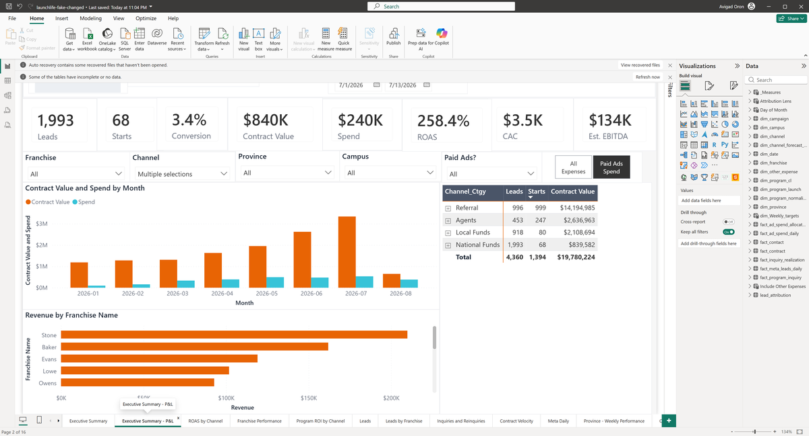</a></figure><figure class="sit" id="sit-pnl-regression-2"><h3 class="sit-title">2 · Dates changed to March 1–31</h3><div class="ctx">March 1–31, Channel: Multiple selections</div><div class="figs">Spend <b>$334K</b> · Leads <b>2,503</b> · Starts <b>119</b> · Conversion <b>4.8</b> · Contract Value <b>$1,308K</b> · CAC <b>$2.8K</b> · Est. EBITDA <b>$209K</b> · ROAS <b>152.5</b> · Pnl total <b>9,645</b></div><p class="note">Date range changed to March 1-31 2026.</p><a class="shot-link frame" href="assets/screen-1209301926cd.png" target="_blank" rel="noopener" data-caption="2 · Dates changed to March 1–31 — March 1–31, Channel: Multiple selections" title="Open the screenshot of Dates changed to March 1–31" aria-label="Open the screenshot of Dates changed to March 1–31">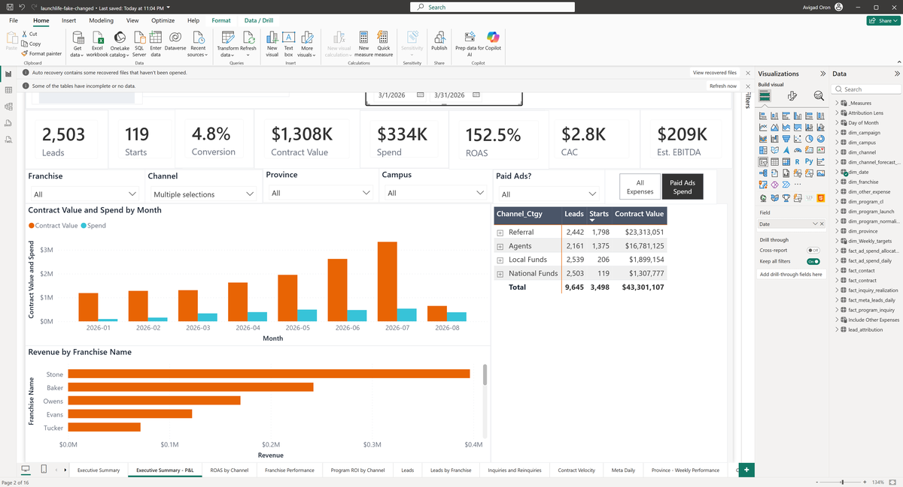</a></figure><figure class="sit" id="sit-pnl-regression-3"><h3 class="sit-title">3 · Dates changed to July 1–13</h3><div class="ctx">July 1–13, Channel: Multiple selections</div><div class="figs">Spend <b>$240K</b> · Leads <b>1,993</b> · Starts <b>68</b> · Conversion <b>3.4</b> · Contract Value <b>$840K</b> · CAC <b>$3.5K</b> · Est. EBITDA <b>$134K</b> · ROAS <b>258.4</b> · Pnl total <b>4,360</b></div><p class="note">Date restored to July 1-13.</p><a class="shot-link frame" href="assets/screen-3902c66540d1.png" target="_blank" rel="noopener" data-caption="3 · Dates changed to July 1–13 — July 1–13, Channel: Multiple selections" title="Open the screenshot of Dates changed to July 1–13" aria-label="Open the screenshot of Dates changed to July 1–13">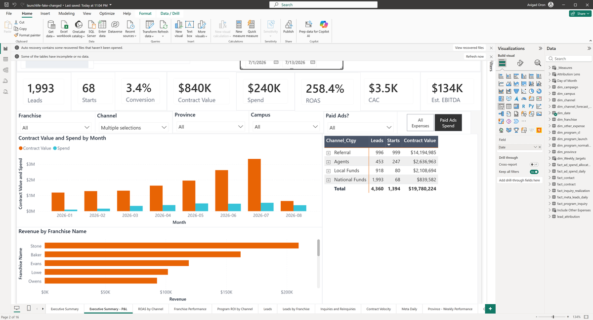</a></figure><figure class="sit" id="sit-pnl-regression-4"><h3 class="sit-title">4 · Switched to All Expenses</h3><div class="ctx">July 1–13, Channel: Multiple selections</div><div class="figs">Spend <b>$240K</b> · Leads <b>1,993</b> · Starts <b>68</b> · Conversion <b>3.4</b> · Contract Value <b>$840K</b> · CAC <b>$3.5K</b> · Est. EBITDA <b>$134K</b> · ROAS <b>258.4</b> · Pnl total <b>4,360</b></div><p class="note">All Expenses toggle selected. The Spend card should increase.</p><a class="shot-link frame" href="assets/screen-664297ac943a.png" target="_blank" rel="noopener" data-caption="4 · Switched to All Expenses — July 1–13, Channel: Multiple selections" title="Open the screenshot of Switched to All Expenses" aria-label="Open the screenshot of Switched to All Expenses">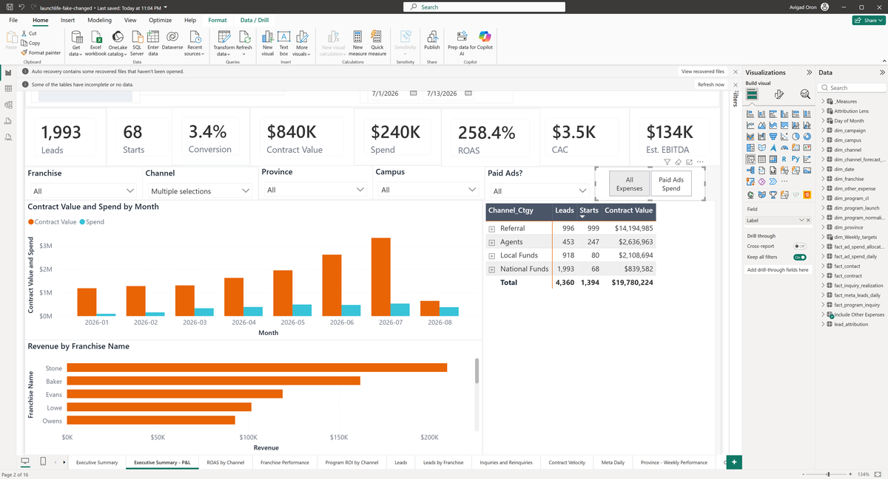</a></figure><figure class="sit" id="sit-pnl-regression-5"><h3 class="sit-title">5 · Switched to Paid Ads Spend</h3><div class="ctx">July 1–13, Channel: Multiple selections</div><div class="figs">Spend <b>$240K</b> · Leads <b>1,993</b> · Starts <b>68</b> · Conversion <b>3.4</b> · Contract Value <b>$840K</b> · CAC <b>$3.5K</b> · Est. EBITDA <b>$134K</b> · ROAS <b>258.4</b> · Pnl total <b>4,360</b></div><p class="note">Paid Ads toggle restored, July 1-13.</p><a class="shot-link frame" href="assets/screen-5cb4f6a6a066.png" target="_blank" rel="noopener" data-caption="5 · Switched to Paid Ads Spend — July 1–13, Channel: Multiple selections" title="Open the screenshot of Switched to Paid Ads Spend" aria-label="Open the screenshot of Switched to Paid Ads Spend">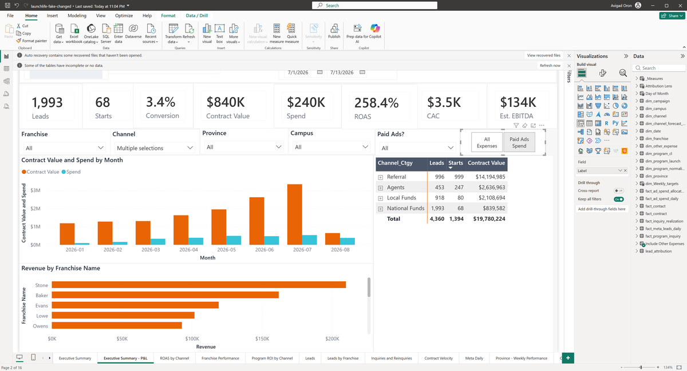</a></figure></div>
<h3>What we observed</h3>
<div class="scroll"><table class="observed"><thead><tr><th>Situation</th><th>Dates</th><th>Filters</th><th class="num">Spend</th><th class="num">Leads</th><th class="num">Starts</th><th class="num">Conversion</th><th class="num">Contract Value</th><th class="num">CAC</th><th class="num">Est. EBITDA</th><th class="num">ROAS</th><th class="num">Pnl total</th><th>Back to baseline?</th></tr></thead><tbody><tr class="base" data-sit="sit-pnl-regression-1"><td><a href="#sit-pnl-regression-1">1 · Baseline</a><a class="shot-link icon" href="assets/screen-3af89fe7de71.png" target="_blank" rel="noopener" data-caption="1 · Baseline — July 1–13, Channel: Multiple selections" title="Open the screenshot of Baseline" aria-label="Open the screenshot of Baseline">📷</a></td><td>July 1–13</td><td>Channel: Multiple selections</td><td class="num">$240K</td><td class="num">1,993</td><td class="num">68</td><td class="num">3.4</td><td class="num">$840K</td><td class="num">$3.5K</td><td class="num">$134K</td><td class="num">258.4</td><td class="num">4,360</td><td></td></tr><tr class="" data-sit="sit-pnl-regression-2"><td><a href="#sit-pnl-regression-2">2 · Dates changed to March 1–31</a><a class="shot-link icon" href="assets/screen-1209301926cd.png" target="_blank" rel="noopener" data-caption="2 · Dates changed to March 1–31 — March 1–31, Channel: Multiple selections" title="Open the screenshot of Dates changed to March 1–31" aria-label="Open the screenshot of Dates changed to March 1–31">📷</a></td><td>March 1–31</td><td>as baseline</td><td class="num">$334K</td><td class="num">2,503<span class="delta">+510 (+26%)</span></td><td class="num">119<span class="delta">+51 (+75%)</span></td><td class="num">4.8<span class="delta">+1.4 (+41%)</span></td><td class="num">$1,308K</td><td class="num">$2.8K</td><td class="num">$209K</td><td class="num">152.5<span class="delta">−105.9 (−41%)</span></td><td class="num">9,645<span class="delta">+5,285 (+121%)</span></td><td></td></tr><tr class="" data-sit="sit-pnl-regression-3"><td><a href="#sit-pnl-regression-3">3 · Dates changed to July 1–13</a><a class="shot-link icon" href="assets/screen-3902c66540d1.png" target="_blank" rel="noopener" data-caption="3 · Dates changed to July 1–13 — July 1–13, Channel: Multiple selections" title="Open the screenshot of Dates changed to July 1–13" aria-label="Open the screenshot of Dates changed to July 1–13">📷</a></td><td>July 1–13</td><td>as baseline</td><td class="num">$240K</td><td class="num">1,993</td><td class="num">68</td><td class="num">3.4</td><td class="num">$840K</td><td class="num">$3.5K</td><td class="num">$134K</td><td class="num">258.4</td><td class="num">4,360</td><td class="ok">Back to baseline ✓</td></tr><tr class="" data-sit="sit-pnl-regression-4"><td><a href="#sit-pnl-regression-4">4 · Switched to All Expenses</a><a class="shot-link icon" href="assets/screen-664297ac943a.png" target="_blank" rel="noopener" data-caption="4 · Switched to All Expenses — July 1–13, Channel: Multiple selections" title="Open the screenshot of Switched to All Expenses" aria-label="Open the screenshot of Switched to All Expenses">📷</a></td><td>July 1–13</td><td>as baseline</td><td class="num">$240K</td><td class="num">1,993</td><td class="num">68</td><td class="num">3.4</td><td class="num">$840K</td><td class="num">$3.5K</td><td class="num">$134K</td><td class="num">258.4</td><td class="num">4,360</td><td></td></tr><tr class="" data-sit="sit-pnl-regression-5"><td><a href="#sit-pnl-regression-5">5 · Switched to Paid Ads Spend</a><a class="shot-link icon" href="assets/screen-5cb4f6a6a066.png" target="_blank" rel="noopener" data-caption="5 · Switched to Paid Ads Spend — July 1–13, Channel: Multiple selections" title="Open the screenshot of Switched to Paid Ads Spend" aria-label="Open the screenshot of Switched to Paid Ads Spend">📷</a></td><td>July 1–13</td><td>as baseline</td><td class="num">$240K</td><td class="num">1,993</td><td class="num">68</td><td class="num">3.4</td><td class="num">$840K</td><td class="num">$3.5K</td><td class="num">$134K</td><td class="num">258.4</td><td class="num">4,360</td><td class="ok">Back to baseline ✓</td></tr></tbody></table></div>
<h3>Checks</h3>
<ul class="checks"><li class="pass"><span class="mark">✓</span>Putting the filters back gave the baseline figures again (Dates changed to July 1–13).<span class="views"><a class="shot-link" href="assets/screen-3af89fe7de71.png" target="_blank" rel="noopener" data-caption="1 · Baseline — July 1–13, Channel: Multiple selections" title="Open the screenshot of Baseline" aria-label="Open the screenshot of Baseline">view 1</a><a class="shot-link" href="assets/screen-3902c66540d1.png" target="_blank" rel="noopener" data-caption="3 · Dates changed to July 1–13 — July 1–13, Channel: Multiple selections" title="Open the screenshot of Dates changed to July 1–13" aria-label="Open the screenshot of Dates changed to July 1–13">view 3</a></span></li><li class="pass"><span class="mark">✓</span>Putting the filters back gave the baseline figures again (Switched to Paid Ads Spend).<span class="views"><a class="shot-link" href="assets/screen-3af89fe7de71.png" target="_blank" rel="noopener" data-caption="1 · Baseline — July 1–13, Channel: Multiple selections" title="Open the screenshot of Baseline" aria-label="Open the screenshot of Baseline">view 1</a><a class="shot-link" href="assets/screen-5cb4f6a6a066.png" target="_blank" rel="noopener" data-caption="5 · Switched to Paid Ads Spend — July 1–13, Channel: Multiple selections" title="Open the screenshot of Switched to Paid Ads Spend" aria-label="Open the screenshot of Switched to Paid Ads Spend">view 5</a></span></li><li class="pass"><span class="mark">✓</span>Dates changed to March 1–31 changed Spend ($240K → $334K), Leads (1,993 → 2,503), Starts (68 → 119), Conversion (3.4 → 4.8), Contract Value ($840K → $1,308K), CAC ($3.5K → $2.8K), Est. EBITDA ($134K → $209K), ROAS (258.4 → 152.5) and Pnl total (4,360 → 9,645).<span class="views"><a class="shot-link" href="assets/screen-3af89fe7de71.png" target="_blank" rel="noopener" data-caption="1 · Baseline — July 1–13, Channel: Multiple selections" title="Open the screenshot of Baseline" aria-label="Open the screenshot of Baseline">view 1</a><a class="shot-link" href="assets/screen-1209301926cd.png" target="_blank" rel="noopener" data-caption="2 · Dates changed to March 1–31 — March 1–31, Channel: Multiple selections" title="Open the screenshot of Dates changed to March 1–31" aria-label="Open the screenshot of Dates changed to March 1–31">view 2</a></span></li><li class="pass"><span class="mark">✓</span>Dates changed to July 1–13 changed Spend ($334K → $240K), Leads (2,503 → 1,993), Starts (119 → 68), Conversion (4.8 → 3.4), Contract Value ($1,308K → $840K), CAC ($2.8K → $3.5K), Est. EBITDA ($209K → $134K), ROAS (152.5 → 258.4) and Pnl total (9,645 → 4,360).<span class="views"><a class="shot-link" href="assets/screen-1209301926cd.png" target="_blank" rel="noopener" data-caption="2 · Dates changed to March 1–31 — March 1–31, Channel: Multiple selections" title="Open the screenshot of Dates changed to March 1–31" aria-label="Open the screenshot of Dates changed to March 1–31">view 2</a><a class="shot-link" href="assets/screen-3902c66540d1.png" target="_blank" rel="noopener" data-caption="3 · Dates changed to July 1–13 — July 1–13, Channel: Multiple selections" title="Open the screenshot of Dates changed to July 1–13" aria-label="Open the screenshot of Dates changed to July 1–13">view 3</a></span></li><li class="fail"><span class="mark">✗</span>Switched to All Expenses left every figure unchanged.<span class="views"><a class="shot-link" href="assets/screen-3902c66540d1.png" target="_blank" rel="noopener" data-caption="3 · Dates changed to July 1–13 — July 1–13, Channel: Multiple selections" title="Open the screenshot of Dates changed to July 1–13" aria-label="Open the screenshot of Dates changed to July 1–13">view 3</a><a class="shot-link" href="assets/screen-664297ac943a.png" target="_blank" rel="noopener" data-caption="4 · Switched to All Expenses — July 1–13, Channel: Multiple selections" title="Open the screenshot of Switched to All Expenses" aria-label="Open the screenshot of Switched to All Expenses">view 4</a></span></li><li class="fail"><span class="mark">✗</span>Switched to Paid Ads Spend left every figure unchanged.<span class="views"><a class="shot-link" href="assets/screen-664297ac943a.png" target="_blank" rel="noopener" data-caption="4 · Switched to All Expenses — July 1–13, Channel: Multiple selections" title="Open the screenshot of Switched to All Expenses" aria-label="Open the screenshot of Switched to All Expenses">view 4</a><a class="shot-link" href="assets/screen-5cb4f6a6a066.png" target="_blank" rel="noopener" data-caption="5 · Switched to Paid Ads Spend — July 1–13, Channel: Multiple selections" title="Open the screenshot of Switched to Paid Ads Spend" aria-label="Open the screenshot of Switched to Paid Ads Spend">view 5</a></span></li><li class="pass"><span class="mark">✓</span>Every figure we checked matched the figure we calculated ourselves from the data. One figure was compared at the rounded precision the card displays.</li></ul>
<h3>Questions for you</h3>
<ol class="asks"><li class="issue">Switched to All Expenses did not move any figure on this page.<span class="detail">Should this change have had no effect here?</span><span class="views"><a class="shot-link" href="assets/screen-3902c66540d1.png" target="_blank" rel="noopener" data-caption="3 · Dates changed to July 1–13 — July 1–13, Channel: Multiple selections" title="Open the screenshot of Dates changed to July 1–13" aria-label="Open the screenshot of Dates changed to July 1–13">view 3</a><a class="shot-link" href="assets/screen-664297ac943a.png" target="_blank" rel="noopener" data-caption="4 · Switched to All Expenses — July 1–13, Channel: Multiple selections" title="Open the screenshot of Switched to All Expenses" aria-label="Open the screenshot of Switched to All Expenses">view 4</a></span></li><li class="issue">Switched to Paid Ads Spend did not move any figure on this page.<span class="detail">Should this change have had no effect here?</span><span class="views"><a class="shot-link" href="assets/screen-664297ac943a.png" target="_blank" rel="noopener" data-caption="4 · Switched to All Expenses — July 1–13, Channel: Multiple selections" title="Open the screenshot of Switched to All Expenses" aria-label="Open the screenshot of Switched to All Expenses">view 4</a><a class="shot-link" href="assets/screen-5cb4f6a6a066.png" target="_blank" rel="noopener" data-caption="5 · Switched to Paid Ads Spend — July 1–13, Channel: Multiple selections" title="Open the screenshot of Switched to Paid Ads Spend" aria-label="Open the screenshot of Switched to Paid Ads Spend">view 5</a></span></li></ol>
<div class="decide"><button type="button" class="sign" data-mode="sign" aria-pressed="false">Sign off</button><button type="button" class="reject" data-mode="reject" aria-pressed="false">Reject</button>
<textarea placeholder="Comment (applies to every expectation of this component unless overridden below)"></textarea><button type="button" class="clear">Clear</button>
<div class="state">No decision recorded for this component.</div></div>
<details class="claims"><summary>Every expectation, with the technical detail (1)</summary><table><thead><tr><th>ID</th><th>Expectation and observation</th><th>Decision</th></tr></thead><tbody><tr data-claim="R-PNL-LEADS" data-status="passed"><td>R-PNL-LEADS<br><span class="status passed">passed</span></td><td><b>Leads=1,993 for July 1-13.</b><p>Leads=1,993. Preserved.</p><small>Observed implementation, verified controls and current DAX; business approval pending.</small></td><td><select aria-label="Decision for R-PNL-LEADS"><option value="">Not reviewed</option><option value="accepted">Accept</option><option value="confirmed_defect">Confirm defect</option><option value="unresolved">Needs clarification</option></select><textarea class="small" rows="2" placeholder="Comment for this expectation only"></textarea></td></tr></tbody></table></details>
</section>
<section class="card" id="comp-daily_leads-regression" data-component="daily_leads-regression">
<div class="head"><div><h2>Daily Leads page (regression)</h2><div class="page">Report page: Daily Leads · 1 of 1 expectations passed</div></div></div>
<h3>What this shows</h3><p class="shows">Daily Leads page data is unchanged at 196 (Sep 1-3 MTD). No date slicer exists (same limitation as baseline).</p>
<details class="tech"><summary>Technical definition</summary><p>Current MTD daily table. Regression replay: identical to baseline.</p></details>
<h3>Situations</h3>
<div class="sits"><figure class="sit" id="sit-daily_leads-regression-1"><h3 class="sit-title">1 · Baseline</h3><div class="ctx"></div><div class="figs">Daily total <b>196</b></div><a class="shot-link frame" href="assets/screen-e98981d8a139.png" target="_blank" rel="noopener" data-caption="1 · Baseline — " title="Open the screenshot of Baseline" aria-label="Open the screenshot of Baseline">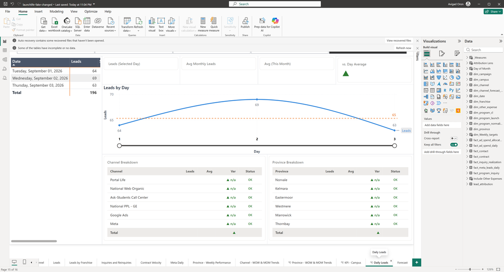</a></figure><figure class="sit" id="sit-daily_leads-regression-2"><h3 class="sit-title">2 · Second capture confirming stable observation</h3><div class="ctx"></div><div class="figs">Daily total <b>196</b></div><p class="note">Second capture confirming stable observation.</p><a class="shot-link frame" href="assets/screen-e98981d8a139.png" target="_blank" rel="noopener" data-caption="2 · Second capture confirming stable observation — " title="Open the screenshot of Second capture confirming stable observation" aria-label="Open the screenshot of Second capture confirming stable observation"></a></figure></div>
<h3>What we observed</h3>
<div class="scroll"><table class="observed"><thead><tr><th>Situation</th><th>Dates</th><th>Filters</th><th class="num">Daily total</th><th>Back to baseline?</th></tr></thead><tbody><tr class="base" data-sit="sit-daily_leads-regression-1"><td><a href="#sit-daily_leads-regression-1">1 · Baseline</a><a class="shot-link icon" href="assets/screen-e98981d8a139.png" target="_blank" rel="noopener" data-caption="1 · Baseline — " title="Open the screenshot of Baseline" aria-label="Open the screenshot of Baseline">📷</a></td><td></td><td>as captured</td><td class="num">196</td><td></td></tr><tr class="" data-sit="sit-daily_leads-regression-2"><td><a href="#sit-daily_leads-regression-2">2 · Second capture confirming stable observation</a><a class="shot-link icon" href="assets/screen-e98981d8a139.png" target="_blank" rel="noopener" data-caption="2 · Second capture confirming stable observation — " title="Open the screenshot of Second capture confirming stable observation" aria-label="Open the screenshot of Second capture confirming stable observation">📷</a></td><td></td><td>as baseline</td><td class="num">196</td><td class="ok">Back to baseline ✓</td></tr></tbody></table></div>
<h3>Checks</h3>
<ul class="checks"><li class="pass"><span class="mark">✓</span>Putting the filters back gave the baseline figures again (Second capture confirming stable observation).<span class="views"><a class="shot-link" href="assets/screen-e98981d8a139.png" target="_blank" rel="noopener" data-caption="1 · Baseline — " title="Open the screenshot of Baseline" aria-label="Open the screenshot of Baseline">view 1</a><a class="shot-link" href="assets/screen-e98981d8a139.png" target="_blank" rel="noopener" data-caption="2 · Second capture confirming stable observation — " title="Open the screenshot of Second capture confirming stable observation" aria-label="Open the screenshot of Second capture confirming stable observation">view 2</a></span></li><li class="pass"><span class="mark">✓</span>Every figure we checked matched the figure we calculated ourselves from the data. One figure was compared at the rounded precision the card displays.</li></ul>
<h3>Questions for you</h3>
<ol class="asks"><li class="ok">Nothing looked inconsistent. Do these figures match what you expect for these dates and filters?</li></ol>
<div class="decide"><button type="button" class="sign" data-mode="sign" aria-pressed="false">Sign off</button><button type="button" class="reject" data-mode="reject" aria-pressed="false">Reject</button>
<textarea placeholder="Comment (applies to every expectation of this component unless overridden below)"></textarea><button type="button" class="clear">Clear</button>
<div class="state">No decision recorded for this component.</div></div>
<details class="claims"><summary>Every expectation, with the technical detail (1)</summary><table><thead><tr><th>ID</th><th>Expectation and observation</th><th>Decision</th></tr></thead><tbody><tr data-claim="R-DAILY-TABLE" data-status="passed"><td>R-DAILY-TABLE<br><span class="status passed">passed</span></td><td><b>Table total = 196.</b><p>Table total = 196. Preserved.</p><small>Observed implementation, verified controls and current DAX; business approval pending.</small></td><td><select aria-label="Decision for R-DAILY-TABLE"><option value="">Not reviewed</option><option value="accepted">Accept</option><option value="confirmed_defect">Confirm defect</option><option value="unresolved">Needs clarification</option></select><textarea class="small" rows="2" placeholder="Comment for this expectation only"></textarea></td></tr></tbody></table></details>
</section>
<section class="card" data-component="other"><div class="head"><h2>Other expectations</h2></div><div class="decide"><button type="button" class="sign" data-mode="sign" aria-pressed="false">Sign off</button><button type="button" class="reject" data-mode="reject" aria-pressed="false">Reject</button><textarea placeholder="Comment"></textarea><button type="button" class="clear">Clear</button><div class="state">No decision recorded for this component.</div></div><details class="claims" open><summary>Expectations (39)</summary><table><thead><tr><th>ID</th><th>Expectation and observation</th><th>Decision</th></tr></thead><tbody><tr data-claim="C-LEADS-TABLE" data-status="failed"><td>C-LEADS-TABLE<br><span class="status failed">failed</span><br><span class="badge c-new-regression">new regression</span></td><td><b>Channel table total matches engine [Leads] = COUNTROWS(fact_program_inquiry) for July 1-13: 4,360.</b><p>Table total is 3,845. Engine [Leads]=4,360, [New Inquiries]=3,845. The visual now binds to [New Inquiries] (inquiry_type=&#x27;inquiry&#x27; only), so the screen shows 3,845 which matches the new measure, not the original [Leads]. The column header still reads &#x27;Leads&#x27;.</p><small>Regression replay of baseline plan against sample-marketing-changed.</small></td><td><select aria-label="Decision for C-LEADS-TABLE"><option value="">Not reviewed</option><option value="confirmed_defect">Confirm defect</option><option value="unresolved">Needs clarification</option></select><textarea class="small" rows="2" placeholder="Comment for this expectation only"></textarea></td></tr><tr data-claim="C-LEADS-EXCLUDE" data-status="inconclusive"><td>C-LEADS-EXCLUDE<br><span class="status inconclusive">inconclusive</span><br><span class="badge c-new-regression">new regression</span></td><td><b>Excluding Google Ads reduces leads to 3,453 (4,360 minus 907 Google Ads leads).</b><p>The regression replay stopped after state1 due to the table total mismatch. The channel exclusion interaction was not replayed, but the root cause is the same binding change: the visual now shows [New Inquiries] instead of [Leads].</p><small>Regression replay of baseline plan against sample-marketing-changed.</small></td><td><select aria-label="Decision for C-LEADS-EXCLUDE"><option value="">Not reviewed</option><option value="confirmed_defect">Confirm defect</option><option value="unresolved">Needs clarification</option></select><textarea class="small" rows="2" placeholder="Comment for this expectation only"></textarea></td></tr><tr data-claim="C-LEADS-DATERANGE" data-status="inconclusive"><td>C-LEADS-DATERANGE<br><span class="status inconclusive">inconclusive</span><br><span class="badge c-new-regression">new regression</span></td><td><b>Shortening the date range to Jul 1-7 reduces leads to 2,252; restoring to Jul 1-13 returns 4,360.</b><p>Not replayed due to earlier assertion failure. The date slicer interaction was not reached, but the same binding change applies.</p><small>Regression replay of baseline plan against sample-marketing-changed.</small></td><td><select aria-label="Decision for C-LEADS-DATERANGE"><option value="">Not reviewed</option><option value="confirmed_defect">Confirm defect</option><option value="unresolved">Needs clarification</option></select><textarea class="small" rows="2" placeholder="Comment for this expectation only"></textarea></td></tr><tr data-claim="C-INQ-TABLE" data-status="passed"><td>C-INQ-TABLE<br><span class="status passed">passed</span><br><span class="badge c-preserved">preserved</span></td><td><b>Channel table Leads total matches engine [Leads] for July 1-13: 4,360.</b><p>Table total 4,360 at baseline, matching engine. All states passed identically to the original baseline.</p><small>Regression replay of baseline plan against sample-marketing-changed.</small></td><td><select aria-label="Decision for C-INQ-TABLE"><option value="">Not reviewed</option><option value="accepted">Accept</option><option value="confirmed_defect">Confirm defect</option><option value="unresolved">Needs clarification</option></select><textarea class="small" rows="2" placeholder="Comment for this expectation only"></textarea></td></tr><tr data-claim="C-INQ-CROSSFILTER" data-status="passed"><td>C-INQ-CROSSFILTER<br><span class="status passed">passed</span><br><span class="badge c-preserved">preserved</span></td><td><b>Clicking the Referrals bar on the channel chart cross-filters the table to 996.</b><p>Cross-filter behavior preserved: clicking Referrals changed table to 996, clearing restored to 4,360.</p><small>Regression replay of baseline plan against sample-marketing-changed.</small></td><td><select aria-label="Decision for C-INQ-CROSSFILTER"><option value="">Not reviewed</option><option value="accepted">Accept</option><option value="confirmed_defect">Confirm defect</option><option value="unresolved">Needs clarification</option></select><textarea class="small" rows="2" placeholder="Comment for this expectation only"></textarea></td></tr><tr data-claim="C-INQ-MONTHLY-NOFILTER" data-status="failed"><td>C-INQ-MONTHLY-NOFILTER<br><span class="status failed">failed</span><br><span class="badge c-still-open">still open</span></td><td><b>The monthly combo chart reacts to the date slicer.</b><p>The monthly combo still shows months 2026-01 through 2026-08 identically for both Jul 1-13 and Jul 1-7. The NoFilter interaction is unchanged.</p><small>Regression replay of baseline plan against sample-marketing-changed.</small></td><td><select aria-label="Decision for C-INQ-MONTHLY-NOFILTER"><option value="">Not reviewed</option><option value="confirmed_defect">Confirm defect</option><option value="unresolved">Needs clarification</option></select><textarea class="small" rows="2" placeholder="Comment for this expectation only"></textarea></td></tr><tr data-claim="C-VEL-CARDS" data-status="passed"><td>C-VEL-CARDS<br><span class="status passed">passed</span><br><span class="badge c-preserved">preserved</span></td><td><b>Starts card shows 48 for July 1-13 with the saved 3-channel selection.</b><p>Starts=48, Median=12, P75=26 at baseline. All states match exactly: no_google Starts=17, extended Starts=183, restored Starts=48.</p><small>Regression replay of baseline plan against sample-marketing-changed.</small></td><td><select aria-label="Decision for C-VEL-CARDS"><option value="">Not reviewed</option><option value="accepted">Accept</option><option value="confirmed_defect">Confirm defect</option><option value="unresolved">Needs clarification</option></select><textarea class="small" rows="2" placeholder="Comment for this expectation only"></textarea></td></tr><tr data-claim="C-VEL-SAVED-SELECTION" data-status="passed"><td>C-VEL-SAVED-SELECTION<br><span class="status passed">passed</span><br><span class="badge c-preserved">preserved</span></td><td><b>Channel slicer has a persistent saved selection of Google Ads, Meta, Ask-Students Call Center.</b><p>Starts=48 matches the 3-channel filter. Channel slicer shows &#x27;Multiple selections&#x27;. Identical to baseline.</p><small>Regression replay of baseline plan against sample-marketing-changed.</small></td><td><select aria-label="Decision for C-VEL-SAVED-SELECTION"><option value="">Not reviewed</option><option value="accepted">Accept</option><option value="confirmed_defect">Confirm defect</option><option value="unresolved">Needs clarification</option></select><textarea class="small" rows="2" placeholder="Comment for this expectation only"></textarea></td></tr><tr data-claim="C-META-TABLE" data-status="passed"><td>C-META-TABLE<br><span class="status passed">passed</span><br><span class="badge c-preserved">preserved</span></td><td><b>Meta Direct Leads table total matches engine for each date range.</b><p>Jul 1-13: 834, single day Jul 7: 60, Aug 1-13: 713, restored: 834. All identical to baseline.</p><small>Regression replay of baseline plan against sample-marketing-changed.</small></td><td><select aria-label="Decision for C-META-TABLE"><option value="">Not reviewed</option><option value="accepted">Accept</option><option value="confirmed_defect">Confirm defect</option><option value="unresolved">Needs clarification</option></select><textarea class="small" rows="2" placeholder="Comment for this expectation only"></textarea></td></tr><tr data-claim="C-META-RATIO" data-status="inconclusive"><td>C-META-RATIO<br><span class="status inconclusive">inconclusive</span><br><span class="badge c-still-open">still open</span></td><td><b>CRM Meta / Platform Meta ratio should be &lt;= 1.0.</b><p>Not re-tested; the model data is unchanged and this is an engine-only claim. The same ratio anomalies persist.</p><small>Baseline claim carried forward.</small></td><td><select aria-label="Decision for C-META-RATIO"><option value="">Not reviewed</option><option value="confirmed_defect">Confirm defect</option><option value="unresolved">Needs clarification</option></select><textarea class="small" rows="2" placeholder="Comment for this expectation only"></textarea></td></tr><tr data-claim="C-PNL-LEADS" data-status="passed"><td>C-PNL-LEADS<br><span class="status passed">passed</span><br><span class="badge c-preserved">preserved</span></td><td><b>Leads card shows 1,993 for July 1-13 with the saved 6-channel selection.</b><p>Leads=1,993 at baseline. March: 2,503. Restored: 1,993. All identical to baseline.</p><small>Regression replay of baseline plan against sample-marketing-changed.</small></td><td><select aria-label="Decision for C-PNL-LEADS"><option value="">Not reviewed</option><option value="accepted">Accept</option><option value="confirmed_defect">Confirm defect</option><option value="unresolved">Needs clarification</option></select><textarea class="small" rows="2" placeholder="Comment for this expectation only"></textarea></td></tr><tr data-claim="C-PNL-TOGGLE" data-status="inconclusive"><td>C-PNL-TOGGLE<br><span class="status inconclusive">inconclusive</span><br><span class="badge c-still-open">still open</span></td><td><b>Switching to All Expenses increases the Spend card.</b><p>Spend stayed at &#x27;$240K&#x27;. Identical to baseline behavior.</p><small>Regression replay of baseline plan against sample-marketing-changed.</small></td><td><select aria-label="Decision for C-PNL-TOGGLE"><option value="">Not reviewed</option><option value="confirmed_defect">Confirm defect</option><option value="unresolved">Needs clarification</option></select><textarea class="small" rows="2" placeholder="Comment for this expectation only"></textarea></td></tr><tr data-claim="C-PNL-TABLE-ALL" data-status="inconclusive"><td>C-PNL-TABLE-ALL<br><span class="status inconclusive">inconclusive</span><br><span class="badge c-still-open">still open</span></td><td><b>The P&amp;L table shows data for all channels regardless of Channel slicer selection.</b><p>Table total was 4,360 while Leads card showed 1,993. Same as baseline.</p><small>Regression replay of baseline plan against sample-marketing-changed.</small></td><td><select aria-label="Decision for C-PNL-TABLE-ALL"><option value="">Not reviewed</option><option value="confirmed_defect">Confirm defect</option><option value="unresolved">Needs clarification</option></select><textarea class="small" rows="2" placeholder="Comment for this expectation only"></textarea></td></tr><tr data-claim="C-DAILY-TABLE" data-status="passed"><td>C-DAILY-TABLE<br><span class="status passed">passed</span><br><span class="badge c-preserved">preserved</span></td><td><b>Table total matches engine [Leads] with is_current_mtd=TRUE and 6-channel filter: 196.</b><p>Table total 196. Identical to baseline.</p><small>Regression replay of baseline plan against sample-marketing-changed.</small></td><td><select aria-label="Decision for C-DAILY-TABLE"><option value="">Not reviewed</option><option value="accepted">Accept</option><option value="confirmed_defect">Confirm defect</option><option value="unresolved">Needs clarification</option></select><textarea class="small" rows="2" placeholder="Comment for this expectation only"></textarea></td></tr><tr data-claim="C-DAILY-NO-DATE-SLICER" data-status="inconclusive"><td>C-DAILY-NO-DATE-SLICER<br><span class="status inconclusive">inconclusive</span><br><span class="badge c-still-open">still open</span></td><td><b>The page should allow switching between monthly date ranges.</b><p>No date slicer. Same as baseline.</p><small>Baseline claim carried forward.</small></td><td><select aria-label="Decision for C-DAILY-NO-DATE-SLICER"><option value="">Not reviewed</option><option value="confirmed_defect">Confirm defect</option><option value="unresolved">Needs clarification</option></select><textarea class="small" rows="2" placeholder="Comment for this expectation only"></textarea></td></tr><tr data-claim="PRB-leads-weekday" data-status="inconclusive"><td>PRB-leads-weekday<br><span class="status inconclusive">inconclusive</span><br><span class="badge c-still-open">still open</span></td><td><b>Daily lead counts within weekday-adjusted band.</b><p>Not re-probed; model data identical. Baseline found 2 outlier days.</p><small>Baseline claim carried forward; no data change.</small></td><td><select aria-label="Decision for PRB-leads-weekday"><option value="">Not reviewed</option><option value="confirmed_defect">Confirm defect</option><option value="unresolved">Needs clarification</option></select><textarea class="small" rows="2" placeholder="Comment for this expectation only"></textarea></td></tr><tr data-claim="PRB-leads-changepoints" data-status="passed"><td>PRB-leads-changepoints<br><span class="status passed">passed</span><br><span class="badge c-preserved">preserved</span></td><td><b>No level shifts in daily lead volume.</b><p>Baseline passed. Model data identical.</p><small>Baseline claim carried forward; no data change.</small></td><td><select aria-label="Decision for PRB-leads-changepoints"><option value="">Not reviewed</option><option value="accepted">Accept</option><option value="confirmed_defect">Confirm defect</option><option value="unresolved">Needs clarification</option></select><textarea class="small" rows="2" placeholder="Comment for this expectation only"></textarea></td></tr><tr data-claim="PRB-leads-additivity" data-status="passed"><td>PRB-leads-additivity<br><span class="status passed">passed</span><br><span class="badge c-preserved">preserved</span></td><td><b>Channel lead counts sum to total.</b><p>Baseline passed (69,289 = 69,289). Model data identical.</p><small>Baseline claim carried forward; no data change.</small></td><td><select aria-label="Decision for PRB-leads-additivity"><option value="">Not reviewed</option><option value="accepted">Accept</option><option value="confirmed_defect">Confirm defect</option><option value="unresolved">Needs clarification</option></select><textarea class="small" rows="2" placeholder="Comment for this expectation only"></textarea></td></tr><tr data-claim="PRB-inq-fanout" data-status="passed"><td>PRB-inq-fanout<br><span class="status passed">passed</span><br><span class="badge c-preserved">preserved</span></td><td><b>No duplicate inquiry rows from channel join.</b><p>Baseline passed (multiplier 1.0). Model data identical.</p><small>Baseline claim carried forward; no data change.</small></td><td><select aria-label="Decision for PRB-inq-fanout"><option value="">Not reviewed</option><option value="accepted">Accept</option><option value="confirmed_defect">Confirm defect</option><option value="unresolved">Needs clarification</option></select><textarea class="small" rows="2" placeholder="Comment for this expectation only"></textarea></td></tr><tr data-claim="PRB-inq-duplicate-keys" data-status="passed"><td>PRB-inq-duplicate-keys<br><span class="status passed">passed</span><br><span class="badge c-preserved">preserved</span></td><td><b>Inquiry IDs unique.</b><p>Baseline passed (0 duplicates). Model data identical.</p><small>Baseline claim carried forward; no data change.</small></td><td><select aria-label="Decision for PRB-inq-duplicate-keys"><option value="">Not reviewed</option><option value="accepted">Accept</option><option value="confirmed_defect">Confirm defect</option><option value="unresolved">Needs clarification</option></select><textarea class="small" rows="2" placeholder="Comment for this expectation only"></textarea></td></tr><tr data-claim="PRB-campaign-name-churn-inquiries" data-status="inconclusive"><td>PRB-campaign-name-churn-inquiries<br><span class="status inconclusive">inconclusive</span><br><span class="badge c-still-open">still open</span></td><td><b>Each campaign key has exactly one name.</b><p>Baseline inconclusive (column not found). Same model.</p><small>Baseline claim carried forward; no data change.</small></td><td><select aria-label="Decision for PRB-campaign-name-churn-inquiries"><option value="">Not reviewed</option><option value="confirmed_defect">Confirm defect</option><option value="unresolved">Needs clarification</option></select><textarea class="small" rows="2" placeholder="Comment for this expectation only"></textarea></td></tr><tr data-claim="PRB-contract-missing-days" data-status="passed"><td>PRB-contract-missing-days<br><span class="status passed">passed</span><br><span class="badge c-preserved">preserved</span></td><td><b>Share of contracts without days_to_contract below 15%.</b><p>Baseline passed (1.7%). Model data identical.</p><small>Baseline claim carried forward; no data change.</small></td><td><select aria-label="Decision for PRB-contract-missing-days"><option value="">Not reviewed</option><option value="accepted">Accept</option><option value="confirmed_defect">Confirm defect</option><option value="unresolved">Needs clarification</option></select><textarea class="small" rows="2" placeholder="Comment for this expectation only"></textarea></td></tr><tr data-claim="PRB-contract-nonpositive-value" data-status="failed"><td>PRB-contract-nonpositive-value<br><span class="status failed">failed</span><br><span class="badge c-still-open">still open</span></td><td><b>No contracts with non-positive value.</b><p>Baseline found 534. Model data identical.</p><small>Baseline claim carried forward; no data change.</small></td><td><select aria-label="Decision for PRB-contract-nonpositive-value"><option value="">Not reviewed</option><option value="confirmed_defect">Confirm defect</option><option value="unresolved">Needs clarification</option></select><textarea class="small" rows="2" placeholder="Comment for this expectation only"></textarea></td></tr><tr data-claim="PRB-meta-weekday" data-status="inconclusive"><td>PRB-meta-weekday<br><span class="status inconclusive">inconclusive</span><br><span class="badge c-still-open">still open</span></td><td><b>Daily platform Meta leads within weekday-adjusted band.</b><p>Baseline found 1 outlier. Model data identical.</p><small>Baseline claim carried forward; no data change.</small></td><td><select aria-label="Decision for PRB-meta-weekday"><option value="">Not reviewed</option><option value="confirmed_defect">Confirm defect</option><option value="unresolved">Needs clarification</option></select><textarea class="small" rows="2" placeholder="Comment for this expectation only"></textarea></td></tr><tr data-claim="PRB-meta-changepoints" data-status="inconclusive"><td>PRB-meta-changepoints<br><span class="status inconclusive">inconclusive</span><br><span class="badge c-still-open">still open</span></td><td><b>No level shifts in platform Meta leads.</b><p>Baseline found 4 shifts. Model data identical.</p><small>Baseline claim carried forward; no data change.</small></td><td><select aria-label="Decision for PRB-meta-changepoints"><option value="">Not reviewed</option><option value="confirmed_defect">Confirm defect</option><option value="unresolved">Needs clarification</option></select><textarea class="small" rows="2" placeholder="Comment for this expectation only"></textarea></td></tr><tr data-claim="PRB-meta-ratio-stability" data-status="inconclusive"><td>PRB-meta-ratio-stability<br><span class="status inconclusive">inconclusive</span><br><span class="badge c-still-open">still open</span></td><td><b>CRM/platform ratio always within bounds.</b><p>Baseline found many days above bound. Model data identical.</p><small>Baseline claim carried forward; no data change.</small></td><td><select aria-label="Decision for PRB-meta-ratio-stability"><option value="">Not reviewed</option><option value="confirmed_defect">Confirm defect</option><option value="unresolved">Needs clarification</option></select><textarea class="small" rows="2" placeholder="Comment for this expectation only"></textarea></td></tr><tr data-claim="PRB-spend-changepoints" data-status="inconclusive"><td>PRB-spend-changepoints<br><span class="status inconclusive">inconclusive</span><br><span class="badge c-still-open">still open</span></td><td><b>No level shifts in daily allocated spend.</b><p>Baseline found 4 shifts. Model data identical.</p><small>Baseline claim carried forward; no data change.</small></td><td><select aria-label="Decision for PRB-spend-changepoints"><option value="">Not reviewed</option><option value="confirmed_defect">Confirm defect</option><option value="unresolved">Needs clarification</option></select><textarea class="small" rows="2" placeholder="Comment for this expectation only"></textarea></td></tr><tr data-claim="PRB-campaign-window-spend" data-status="failed"><td>PRB-campaign-window-spend<br><span class="status failed">failed</span><br><span class="badge c-still-open">still open</span></td><td><b>No spend rows outside campaign active windows.</b><p>Baseline found 1,674. Model data identical.</p><small>Baseline claim carried forward; no data change.</small></td><td><select aria-label="Decision for PRB-campaign-window-spend"><option value="">Not reviewed</option><option value="confirmed_defect">Confirm defect</option><option value="unresolved">Needs clarification</option></select><textarea class="small" rows="2" placeholder="Comment for this expectation only"></textarea></td></tr><tr data-claim="PRB-channel-mix-stability" data-status="inconclusive"><td>PRB-channel-mix-stability<br><span class="status inconclusive">inconclusive</span><br><span class="badge c-still-open">still open</span></td><td><b>Channel mix stable between June-July and August.</b><p>Baseline inconclusive (column error). Model data identical.</p><small>Baseline claim carried forward; no data change.</small></td><td><select aria-label="Decision for PRB-channel-mix-stability"><option value="">Not reviewed</option><option value="confirmed_defect">Confirm defect</option><option value="unresolved">Needs clarification</option></select><textarea class="small" rows="2" placeholder="Comment for this expectation only"></textarea></td></tr><tr data-claim="PRB-event-day-utc" data-status="passed"><td>PRB-event-day-utc<br><span class="status passed">passed</span><br><span class="badge c-preserved">preserved</span></td><td><b>submit_date_key equals UTC date of submit_at.</b><p>Baseline passed (0 mismatches). Model data identical.</p><small>Baseline claim carried forward; no data change.</small></td><td><select aria-label="Decision for PRB-event-day-utc"><option value="">Not reviewed</option><option value="accepted">Accept</option><option value="confirmed_defect">Confirm defect</option><option value="unresolved">Needs clarification</option></select><textarea class="small" rows="2" placeholder="Comment for this expectation only"></textarea></td></tr><tr data-claim="PRB-event-day-toronto" data-status="failed"><td>PRB-event-day-toronto<br><span class="status failed">failed</span><br><span class="badge c-still-open">still open</span></td><td><b>submit_date_key equals Toronto date of submit_at.</b><p>Baseline failed (5,942 mismatches). Model data identical.</p><small>Baseline claim carried forward; no data change.</small></td><td><select aria-label="Decision for PRB-event-day-toronto"><option value="">Not reviewed</option><option value="confirmed_defect">Confirm defect</option><option value="unresolved">Needs clarification</option></select><textarea class="small" rows="2" placeholder="Comment for this expectation only"></textarea></td></tr><tr data-claim="PRB-dax-assert-completed-months" data-status="passed"><td>PRB-dax-assert-completed-months<br><span class="status passed">passed</span><br><span class="badge c-preserved">preserved</span></td><td><b>Every flagged month/day has inquiry data.</b><p>Baseline passed. Model data identical.</p><small>Baseline claim carried forward; no data change.</small></td><td><select aria-label="Decision for PRB-dax-assert-completed-months"><option value="">Not reviewed</option><option value="accepted">Accept</option><option value="confirmed_defect">Confirm defect</option><option value="unresolved">Needs clarification</option></select><textarea class="small" rows="2" placeholder="Comment for this expectation only"></textarea></td></tr><tr data-claim="LINT-volatile-time-in-column" data-status="inconclusive"><td>LINT-volatile-time-in-column<br><span class="status inconclusive">inconclusive</span></td><td><b>Date flags derived from the clock reflect the imported data&#x27;s completeness, not the machine date.</b><p>2 object(s). A calculated column is evaluated when the model is processed or recalculated, not when a visual queries it; a TODAY()/NOW() column freezes the clock at refresh time and can also be re-evaluated on open, so flags such as &quot;completed month&quot; drift away from the imported data. Hits: dim_date[is_completed_month_this_year]: dim_date[year] = YEAR ( TODAY () )
    &amp;&amp; dim_date[date_key] &lt; DATE ( YEAR ( TODAY () ), MONTH ( TODAY () ), 1 ); dim_date[is_current_month]: AND (
    YEAR ( dim_date[date_key] ) = YEAR ( TODAY () ),
    MONTH ( dim_date[date_key] ) = MONTH ( TODAY () )
)</p><small>Model lint lint.volatile_time_in_column (severity high); agent explanation pending.</small></td><td><select aria-label="Decision for LINT-volatile-time-in-column"><option value="">Not reviewed</option><option value="confirmed_defect">Confirm defect</option><option value="unresolved">Needs clarification</option></select><textarea class="small" rows="2" placeholder="Comment for this expectation only"></textarea></td></tr><tr data-claim="LINT-freshness-label-on-business-date" data-status="inconclusive"><td>LINT-freshness-label-on-business-date<br><span class="status inconclusive">inconclusive</span></td><td><b>Freshness labels report model refresh, not the latest selected business date.</b><p>1 object(s). The measure is named as a refresh/freshness indicator but computes from business data (for example MAX of a business date); it changes with slicers and does not report when the model was refreshed. Hits: _Measures[Last Refresh]: MAX ( fact_contact[contact_created_date_key] )</p><small>Model lint lint.freshness_label_on_business_date (severity medium); agent explanation pending.</small></td><td><select aria-label="Decision for LINT-freshness-label-on-business-date"><option value="">Not reviewed</option><option value="confirmed_defect">Confirm defect</option><option value="unresolved">Needs clarification</option></select><textarea class="small" rows="2" placeholder="Comment for this expectation only"></textarea></td></tr><tr data-claim="LINT-format-hides-precision" data-status="inconclusive"><td>LINT-format-hides-precision<br><span class="status inconclusive">inconclusive</span></td><td><b>Displayed precision does not hide changes the analyst cares about.</b><p>3 object(s). The format string rounds a statistic (median, percentile, average, ratio) to an integer; the displayed value differs from the engine value and can hide small changes. Hits: _Measures[Avg Days to Realize]: format &quot;0&quot; on AVERAGEX(...; _Measures[Median Days to Contract]: format &quot;0&quot; on MEDIAN (...; _Measures[P75 Days to Contract]: format &quot;0&quot; on PERCENTILE.INC (...</p><small>Model lint lint.format_hides_precision (severity low); agent explanation pending.</small></td><td><select aria-label="Decision for LINT-format-hides-precision"><option value="">Not reviewed</option><option value="confirmed_defect">Confirm defect</option><option value="unresolved">Needs clarification</option></select><textarea class="small" rows="2" placeholder="Comment for this expectation only"></textarea></td></tr><tr data-claim="LINT-volatile-time-in-measure" data-status="inconclusive"><td>LINT-volatile-time-in-measure<br><span class="status inconclusive">inconclusive</span></td><td><b>Clock-dependent measures are documented as such and behave correctly on a stale import.</b><p>20 object(s). The result depends on the machine clock at query time, not on the imported data; screenshots taken on different days differ and a stale import silently shows an empty recent window. Hits: _Measures[Leads In-Flight]: CALCULATE(
        [Contacts],
        USERELATIONSHIP(fact_contact[first_touch_channel_key], dim_channel[channel_key]),; _Measures[IsCurrentMonth]: IF(
    YEAR( MAX(&#x27;dim_date&#x27;[date_key]) ) = YEAR( TODAY() )
        &amp;&amp; MONTH( MAX(dim_date[date_key]) ) = MONTH( TODAY(); _Measures[Data Drop Monitor Full HTML]: VAR _SelDate = [Selected Date]
VAR _DateLabel = FORMAT ( _SelDate, &quot;dddd, mmm dd, yyyy&quot;, &quot;en-US&quot; )
VAR _Leads = [Leads S; _Measures[Selected Date]: VAR Sel = SELECTEDVALUE ( dim_date[date_key] )
RETURN
    IF ( ISFILTERED ( dim_date[date_key] ) &amp;&amp; NOT ISBLANK ( Sel ),; _Measures[Leads YTD]: CALCULATE(
    [Leads],
    FILTER(
        ALL(&#x27;dim_date&#x27;),
        &#x27;dim_date&#x27;[year] = YEAR(TODAY()) &amp;&amp;
        &#x27;dim_da; _Measures[Elapsed Weeks YTD]: CALCULATE(
    DISTINCTCOUNT(&#x27;dim_date&#x27;[iso_week]),
    FILTER(
        ALL(&#x27;dim_date&#x27;),
        &#x27;dim_date&#x27;[year] = YEAR; _Measures[Leads MTD]: CALCULATE(
    [Leads],
    FILTER(
        ALL(&#x27;dim_date&#x27;),
        &#x27;dim_date&#x27;[month_num] = MONTH(TODAY()) &amp;&amp;
        &#x27;; _Measures[Leads Target Monthly]: VAR _WeeksInMonth =
    CALCULATE(
        DISTINCTCOUNT(&#x27;dim_date&#x27;[iso_week]),
        FILTER(
            ALL(&#x27;dim_dat; _Measures[Starts YTD]: CALCULATE(
    [Starts],
    FILTER(
        ALL(&#x27;dim_date&#x27;),
        &#x27;dim_date&#x27;[year] = YEAR(TODAY()) &amp;&amp;
        &#x27;dim_d; _Measures[Starts MTD]: CALCULATE(
    [Starts],
    FILTER(
        ALL(&#x27;dim_date&#x27;),
        &#x27;dim_date&#x27;[month_num] = MONTH(TODAY()) &amp;&amp;
        ; _Measures[Starts Target Monthly]: VAR _WeeksInMonth =
    CALCULATE(
        DISTINCTCOUNT(&#x27;dim_date&#x27;[iso_week]),
        FILTER(
            ALL(&#x27;dim_dat; _Measures[Elapsed Days MTD]: DAY(TODAY()) ... and 8 more (see the lint file)</p><small>Model lint lint.volatile_time_in_measure (severity medium); agent explanation pending.</small></td><td><select aria-label="Decision for LINT-volatile-time-in-measure"><option value="">Not reviewed</option><option value="confirmed_defect">Confirm defect</option><option value="unresolved">Needs clarification</option></select><textarea class="small" rows="2" placeholder="Comment for this expectation only"></textarea></td></tr><tr data-claim="LINT-raw-division" data-status="inconclusive"><td>LINT-raw-division<br><span class="status inconclusive">inconclusive</span></td><td><b>Ratios return BLANK, not infinity or an error, on empty denominators.</b><p>1 object(s). Division with / returns infinity or an error when the denominator is zero or BLANK; DIVIDE() with an explicit alternate result makes empty slices explicit. Hits: _Measures[Conversion]: [Starts]/[Leads]</p><small>Model lint lint.raw_division (severity low); agent explanation pending.</small></td><td><select aria-label="Decision for LINT-raw-division"><option value="">Not reviewed</option><option value="confirmed_defect">Confirm defect</option><option value="unresolved">Needs clarification</option></select><textarea class="small" rows="2" placeholder="Comment for this expectation only"></textarea></td></tr><tr data-claim="LINT-date-context-removed" data-status="inconclusive"><td>LINT-date-context-removed<br><span class="status inconclusive">inconclusive</span></td><td><b>Removing the date context is intended and a partial-period selection does not add whole-period amounts.</b><p>25 object(s). The measure removes or widens the date filter; under a partial-period slicer it can add whole-month or all-time amounts. Confirm the intended period semantics with a partial range. Hits: _Measures[Other Expenses Total]: ALLSELECTED(&#x27;dim_date&#x27;); _Measures[Snapshot HTML]: ALLSELECTED( dim_date ); _Measures[Snapshot HTML V2]: ALLSELECTED( dim_date ); _Measures[Data Drop Monitor Full HTML]: REMOVEFILTERS ( dim_date ); _Measures[Day Type Avg This Month]: REMOVEFILTERS ( dim_date ); _Measures[Channel Month Avg Daily Leads]: REMOVEFILTERS ( dim_date ); _Measures[Province Month Avg Daily Leads]: REMOVEFILTERS ( dim_date ); _Measures[Card Avg Monthly Leads HTML]: REMOVEFILTERS ( dim_date ); _Measures[Card Avg Weekday HTML]: REMOVEFILTERS ( dim_date ); _Measures[Card Province Breakdown HTML]: REMOVEFILTERS ( dim_date ); _Measures[Card Vs Day Average HTML]: REMOVEFILTERS ( dim_date ); _Measures[Card Channel Breakdown HTML]: REMOVEFILTERS ( dim_date ) ... and 13 more (see the lint file)</p><small>Model lint lint.date_context_removed (severity medium); agent explanation pending.</small></td><td><select aria-label="Decision for LINT-date-context-removed"><option value="">Not reviewed</option><option value="confirmed_defect">Confirm defect</option><option value="unresolved">Needs clarification</option></select><textarea class="small" rows="2" placeholder="Comment for this expectation only"></textarea></td></tr><tr data-claim="LINT-multiple-relationship-paths" data-status="inconclusive"><td>LINT-multiple-relationship-paths<br><span class="status inconclusive">inconclusive</span></td><td><b>Each visual&#x27;s attribution lens (first / last touch) matches its label.</b><p>6 object(s). Several relationships between the same tables (for example first-touch and last-touch attribution) mean a measure silently uses the active one; visuals labelled with one attribution lens can compute another unless USERELATIONSHIP is explicit. Hits: fact_contact -&gt; dim_date: [{&quot;from&quot;: &quot;contact_created_date_key&quot;, &quot;to&quot;: &quot;date_key&quot;, &quot;active&quot;: true}, {&quot;from&quot;: &quot;first_enrollment_date_key&quot;, &quot;to&quot;: &quot;da; fact_contact -&gt; dim_channel: [{&quot;from&quot;: &quot;last_touch_channel_key&quot;, &quot;to&quot;: &quot;channel_key&quot;, &quot;active&quot;: true}, {&quot;from&quot;: &quot;first_touch_channel_key&quot;, &quot;to&quot;: &quot;cha; fact_contact -&gt; dim_campaign: [{&quot;from&quot;: &quot;last_touch_campaign_key&quot;, &quot;to&quot;: &quot;campaign_key&quot;, &quot;active&quot;: true}, {&quot;from&quot;: &quot;first_touch_campaign_key&quot;, &quot;to&quot;: &quot;; fact_contract -&gt; dim_channel: [{&quot;from&quot;: &quot;last_touch_channel_key&quot;, &quot;to&quot;: &quot;channel_key&quot;, &quot;active&quot;: true}, {&quot;from&quot;: &quot;first_touch_channel_key&quot;, &quot;to&quot;: &quot;cha; fact_contract -&gt; dim_campaign: [{&quot;from&quot;: &quot;last_touch_campaign_key&quot;, &quot;to&quot;: &quot;campaign_key&quot;, &quot;active&quot;: true}, {&quot;from&quot;: &quot;first_touch_campaign_key&quot;, &quot;to&quot;: &quot;; fact_inquiry_realization -&gt; dim_date: [{&quot;from&quot;: &quot;inquiry_date_key&quot;, &quot;to&quot;: &quot;date_key&quot;, &quot;active&quot;: true}, {&quot;from&quot;: &quot;contract_start_date_key&quot;, &quot;to&quot;: &quot;date_key&quot;, &quot;</p><small>Model lint lint.multiple_relationship_paths (severity medium); agent explanation pending.</small></td><td><select aria-label="Decision for LINT-multiple-relationship-paths"><option value="">Not reviewed</option><option value="confirmed_defect">Confirm defect</option><option value="unresolved">Needs clarification</option></select><textarea class="small" rows="2" placeholder="Comment for this expectation only"></textarea></td></tr></tbody></table></details></section>
<section class="identity"><h2>Record decisions</h2><label>Reviewer<input id="reviewer" type="text" autocomplete="name"></label>
<label><input id="confirmation" type="checkbox"> I reviewed the screenshots and expectations I decided on.</label>
<button id="export" disabled>Export decisions</button><p id="status" role="status"></p>
<p class="manifest">Evidence manifest: c54ae4bb399e0edaf6f614b5ab16afd276fdcd5e959f9c884cc34851c8cafede</p></section></main>
<dialog class="lightbox" id="lightbox" aria-label="Screenshot"><figure><figcaption id="lightbox-cap"></figcaption><span class="hint">Click anywhere or press Escape to close.</span></figure></dialog>
<script type="application/json" id="payload">{"case_id": "fake-regression-1", "manifest_sha256": "c54ae4bb399e0edaf6f614b5ab16afd276fdcd5e959f9c884cc34851c8cafede", "claims": [{"id": "C-LEADS-TABLE", "expected": "Channel table total matches engine [Leads] = COUNTROWS(fact_program_inquiry) for July 1-13: 4,360.", "observed": "Table total is 3,845. Engine [Leads]=4,360, [New Inquiries]=3,845. The visual now binds to [New Inquiries] (inquiry_type='inquiry' only), so the screen shows 3,845 which matches the new measure, not the original [Leads]. The column header still reads 'Leads'.", "source": "Regression replay of baseline plan against sample-marketing-changed.", "status": "failed", "layer": "interaction", "change_classification": "new regression", "what_it_shows": "The Leads page table used to count all inquiries (4,360 for Jul 1-13). It now counts only new inquiries, excluding reinquiries, and shows 3,845. The column header still says 'Leads' but the number is 515 lower because 515 reinquiries are excluded.", "question": "Was the switch from all inquiries to new-inquiries-only intentional? The header still says 'Leads' which is misleading if the number now excludes reinquiries.", "coverage": {"required": ["engine", "render"], "observed": ["engine", "render"]}, "evidence": ["evidence/runs/evidence/state1_baseline/state.json", "evidence/runs/evidence/state1_baseline/check.json", "evidence/runs/evidence/dax_both_measures.json"], "state_checks": ["evidence/runs/evidence/state1_baseline/check.json"]}, {"id": "C-LEADS-EXCLUDE", "expected": "Excluding Google Ads reduces leads to 3,453 (4,360 minus 907 Google Ads leads).", "observed": "The regression replay stopped after state1 due to the table total mismatch. The channel exclusion interaction was not replayed, but the root cause is the same binding change: the visual now shows [New Inquiries] instead of [Leads].", "source": "Regression replay of baseline plan against sample-marketing-changed.", "status": "inconclusive", "layer": "interaction", "change_classification": "new regression", "what_it_shows": "Could not verify the channel filter arithmetic because the table already shows the wrong measure. If the measure were corrected to [Leads], this test would be expected to pass as before.", "question": "Once the measure binding is resolved, does the channel exclusion still subtract correctly?", "coverage": {"required": ["engine", "render", "interaction"], "observed": ["engine"]}, "evidence": ["evidence/runs/evidence/state1_baseline/state.json", "evidence/runs/evidence/state1_baseline/check.json"], "state_checks": []}, {"id": "C-LEADS-DATERANGE", "expected": "Shortening the date range to Jul 1-7 reduces leads to 2,252; restoring to Jul 1-13 returns 4,360.", "observed": "Not replayed due to earlier assertion failure. The date slicer interaction was not reached, but the same binding change applies.", "source": "Regression replay of baseline plan against sample-marketing-changed.", "status": "inconclusive", "layer": "interaction", "change_classification": "new regression", "what_it_shows": "The date range test could not complete because the table now shows a different measure. The date slicer likely still works correctly but the numbers would differ from baseline.", "question": "Once the measure binding is resolved, does the date slicer still control the table correctly?", "coverage": {"required": ["engine", "render", "interaction"], "observed": ["engine"]}, "evidence": ["evidence/runs/evidence/state1_baseline/state.json", "evidence/runs/evidence/state1_baseline/check.json"], "state_checks": []}, {"id": "C-INQ-TABLE", "expected": "Channel table Leads total matches engine [Leads] for July 1-13: 4,360.", "observed": "Table total 4,360 at baseline, matching engine. All states passed identically to the original baseline.", "source": "Regression replay of baseline plan against sample-marketing-changed.", "status": "passed", "layer": "interaction", "change_classification": "preserved", "what_it_shows": "The Inquiries page table total is unchanged at 4,360 for Jul 1-13. This page was not affected by the visual binding change on the Leads page.", "question": "Does the table total match the expected lead count?", "coverage": {"required": ["engine", "render", "interaction"], "observed": ["engine", "render", "interaction"]}, "evidence": ["evidence/runs/inquiries-reg2/state1_baseline/state.json", "evidence/runs/inquiries-reg2/state1_baseline/check.json"], "state_checks": ["evidence/runs/inquiries-reg2/state1_baseline/check.json", "evidence/runs/inquiries-reg2/state2_referrals_click/check.json", "evidence/runs/inquiries-reg2/state3_cleared/check.json", "evidence/runs/inquiries-reg2/state4_short_range/check.json", "evidence/runs/inquiries-reg2/state5_restored/check.json"]}, {"id": "C-INQ-CROSSFILTER", "expected": "Clicking the Referrals bar on the channel chart cross-filters the table to 996.", "observed": "Cross-filter behavior preserved: clicking Referrals changed table to 996, clearing restored to 4,360.", "source": "Regression replay of baseline plan against sample-marketing-changed.", "status": "passed", "layer": "interaction", "change_classification": "preserved", "what_it_shows": "Cross-filtering on the Inquiries page works identically to baseline.", "question": "Does clicking a channel bar filter the table to only that channel?", "coverage": {"required": ["engine", "render", "interaction"], "observed": ["engine", "render", "interaction"]}, "evidence": ["evidence/runs/inquiries-reg2/state2_referrals_click/state.json", "evidence/runs/inquiries-reg2/state3_cleared/state.json"], "state_checks": ["evidence/runs/inquiries-reg2/state2_referrals_click/check.json", "evidence/runs/inquiries-reg2/state3_cleared/check.json"]}, {"id": "C-INQ-MONTHLY-NOFILTER", "expected": "The monthly combo chart reacts to the date slicer.", "observed": "The monthly combo still shows months 2026-01 through 2026-08 identically for both Jul 1-13 and Jul 1-7. The NoFilter interaction is unchanged.", "source": "Regression replay of baseline plan against sample-marketing-changed.", "status": "failed", "layer": "interaction", "change_classification": "still open", "what_it_shows": "The monthly combo chart still does not react to the date slicer. This is the same defect found in the baseline.", "question": "Does the monthly combo chart change when the date range changes?", "coverage": {"required": ["engine", "render", "interaction"], "observed": ["engine", "render", "interaction"]}, "evidence": ["evidence/runs/inquiries-reg2/state1_baseline/state.json", "evidence/runs/inquiries-reg2/state4_short_range/state.json"], "state_checks": ["evidence/runs/inquiries-reg2/state1_baseline/check.json", "evidence/runs/inquiries-reg2/state4_short_range/check.json"]}, {"id": "C-VEL-CARDS", "expected": "Starts card shows 48 for July 1-13 with the saved 3-channel selection.", "observed": "Starts=48, Median=12, P75=26 at baseline. All states match exactly: no_google Starts=17, extended Starts=183, restored Starts=48.", "source": "Regression replay of baseline plan against sample-marketing-changed.", "status": "passed", "layer": "interaction", "change_classification": "preserved", "what_it_shows": "Contract velocity cards are unchanged. This page was not affected.", "question": "Do the contract velocity cards match the engine values for the saved channel selection?", "coverage": {"required": ["engine", "render", "interaction"], "observed": ["engine", "render", "interaction"]}, "evidence": ["evidence/runs/velocity-reg2/state1_baseline/state.json", "evidence/runs/velocity-reg2/state2_no_google/state.json", "evidence/runs/velocity-reg2/state4_extended/state.json"], "state_checks": ["evidence/runs/velocity-reg2/state1_baseline/check.json", "evidence/runs/velocity-reg2/state2_no_google/check.json", "evidence/runs/velocity-reg2/state3_restored_channel/check.json", "evidence/runs/velocity-reg2/state4_extended/check.json", "evidence/runs/velocity-reg2/state5_restored/check.json"]}, {"id": "C-VEL-SAVED-SELECTION", "expected": "Channel slicer has a persistent saved selection of Google Ads, Meta, Ask-Students Call Center.", "observed": "Starts=48 matches the 3-channel filter. Channel slicer shows 'Multiple selections'. Identical to baseline.", "source": "Regression replay of baseline plan against sample-marketing-changed.", "status": "passed", "layer": "interaction", "change_classification": "preserved", "what_it_shows": "The saved channel selection is still in place and works correctly.", "question": "Is the saved channel selection correctly identified as three specific channels?", "coverage": {"required": ["engine", "render", "interaction"], "observed": ["engine", "render", "interaction"]}, "evidence": ["evidence/runs/velocity-reg2/state1_baseline/state.json"], "state_checks": ["evidence/runs/velocity-reg2/state1_baseline/check.json"]}, {"id": "C-META-TABLE", "expected": "Meta Direct Leads table total matches engine for each date range.", "observed": "Jul 1-13: 834, single day Jul 7: 60, Aug 1-13: 713, restored: 834. All identical to baseline.", "source": "Regression replay of baseline plan against sample-marketing-changed.", "status": "passed", "layer": "interaction", "change_classification": "preserved", "what_it_shows": "Meta Daily page data is unchanged across all tested date ranges.", "question": "Does the platform leads total match the source data for the selected dates?", "coverage": {"required": ["engine", "render", "interaction"], "observed": ["engine", "render", "interaction"]}, "evidence": ["evidence/runs/meta_daily-reg2/state1_baseline/state.json", "evidence/runs/meta_daily-reg2/state2_single_day/state.json", "evidence/runs/meta_daily-reg2/state3_august/state.json", "evidence/runs/meta_daily-reg2/state4_restored/state.json"], "state_checks": ["evidence/runs/meta_daily-reg2/state1_baseline/check.json", "evidence/runs/meta_daily-reg2/state2_single_day/check.json", "evidence/runs/meta_daily-reg2/state3_august/check.json", "evidence/runs/meta_daily-reg2/state4_restored/check.json"]}, {"id": "C-META-RATIO", "expected": "CRM Meta / Platform Meta ratio should be \u003c= 1.0.", "observed": "Not re-tested; the model data is unchanged and this is an engine-only claim. The same ratio anomalies persist.", "source": "Baseline claim carried forward.", "status": "inconclusive", "layer": "engine", "change_classification": "still open", "what_it_shows": "The CRM-to-platform ratio anomaly is still present because the underlying data has not changed.", "question": "Is it expected that CRM leads sometimes exceed platform-reported leads?", "coverage": {"required": ["engine"], "observed": ["engine"]}, "evidence": []}, {"id": "C-PNL-LEADS", "expected": "Leads card shows 1,993 for July 1-13 with the saved 6-channel selection.", "observed": "Leads=1,993 at baseline. March: 2,503. Restored: 1,993. All identical to baseline.", "source": "Regression replay of baseline plan against sample-marketing-changed.", "status": "passed", "layer": "interaction", "change_classification": "preserved", "what_it_shows": "The P&L Leads card is unchanged. This page was not affected by the visual binding change.", "question": "Does the Leads card match the engine count for the saved channel selection?", "coverage": {"required": ["engine", "render", "interaction"], "observed": ["engine", "render", "interaction"]}, "evidence": ["evidence/runs/pnl-reg2/state1_baseline/state.json", "evidence/runs/pnl-reg2/state2_march/state.json", "evidence/runs/pnl-reg2/state3_july_back/state.json"], "state_checks": ["evidence/runs/pnl-reg2/state1_baseline/check.json", "evidence/runs/pnl-reg2/state2_march/check.json", "evidence/runs/pnl-reg2/state3_july_back/check.json"]}, {"id": "C-PNL-TOGGLE", "expected": "Switching to All Expenses increases the Spend card.", "observed": "Spend stayed at '$240K'. Identical to baseline behavior.", "source": "Regression replay of baseline plan against sample-marketing-changed.", "status": "inconclusive", "layer": "interaction", "change_classification": "still open", "what_it_shows": "The toggle behavior is unchanged from baseline. The same inconclusive result persists.", "question": "Does the spend card change when switching between paid-ads and all-expenses?", "coverage": {"required": ["engine", "render", "interaction"], "observed": ["engine", "render", "interaction"]}, "evidence": ["evidence/runs/pnl-reg2/state4_all_expenses/state.json"], "state_checks": ["evidence/runs/pnl-reg2/state4_all_expenses/check.json"]}, {"id": "C-PNL-TABLE-ALL", "expected": "The P&L table shows data for all channels regardless of Channel slicer selection.", "observed": "Table total was 4,360 while Leads card showed 1,993. Same as baseline.", "source": "Regression replay of baseline plan against sample-marketing-changed.", "status": "inconclusive", "layer": "render", "change_classification": "still open", "what_it_shows": "The table still shows all channels while cards are filtered. This is unchanged from baseline.", "question": "Is it expected that the table shows all channels while the cards show only the selected channels?", "coverage": {"required": ["engine", "render"], "observed": ["engine", "render"]}, "evidence": ["evidence/runs/pnl-reg2/state1_baseline/state.json"], "state_checks": []}, {"id": "C-DAILY-TABLE", "expected": "Table total matches engine [Leads] with is_current_mtd=TRUE and 6-channel filter: 196.", "observed": "Table total 196. Identical to baseline.", "source": "Regression replay of baseline plan against sample-marketing-changed.", "status": "passed", "layer": "interaction", "change_classification": "preserved", "what_it_shows": "Daily Leads page data is unchanged.", "question": "Does the table total match the expected current month-to-date lead count?", "coverage": {"required": ["engine", "render", "interaction"], "observed": ["engine", "render", "interaction"]}, "evidence": ["evidence/runs/daily_leads-reg2/state1_default/state.json", "evidence/runs/daily_leads-reg2/state2_stable/state.json"], "state_checks": ["evidence/runs/daily_leads-reg2/state1_default/check.json", "evidence/runs/daily_leads-reg2/state2_stable/check.json"]}, {"id": "C-DAILY-NO-DATE-SLICER", "expected": "The page should allow switching between monthly date ranges.", "observed": "No date slicer. Same as baseline.", "source": "Baseline claim carried forward.", "status": "inconclusive", "layer": "render", "change_classification": "still open", "what_it_shows": "The page still has no date range slicer, same limitation as baseline.", "question": "Is the lack of a date-range slicer an intentional design choice for this page?", "coverage": {"required": ["engine", "render"], "observed": ["engine", "render"]}, "evidence": ["evidence/runs/daily_leads-reg2/state1_default/state.json"], "state_checks": []}, {"id": "PRB-leads-weekday", "expected": "Daily lead counts within weekday-adjusted band.", "observed": "Not re-probed; model data identical. Baseline found 2 outlier days.", "source": "Baseline claim carried forward; no data change.", "status": "inconclusive", "layer": "engine", "change_classification": "still open", "detector": "stat.weekday_robust_band", "severity": "review", "coverage": {"required": ["engine"], "observed": ["engine"]}, "evidence": ["evidence/detectors/lint-regression/lint.json"]}, {"id": "PRB-leads-changepoints", "expected": "No level shifts in daily lead volume.", "observed": "Baseline passed. Model data identical.", "source": "Baseline claim carried forward; no data change.", "status": "passed", "layer": "engine", "change_classification": "preserved", "detector": "stat.changepoints", "severity": "review", "coverage": {"required": ["engine"], "observed": ["engine"]}, "evidence": ["evidence/detectors/lint-regression/lint.json"]}, {"id": "PRB-leads-additivity", "expected": "Channel lead counts sum to total.", "observed": "Baseline passed (69,289 = 69,289). Model data identical.", "source": "Baseline claim carried forward; no data change.", "status": "passed", "layer": "engine", "change_classification": "preserved", "detector": "dax.additivity", "severity": "review", "coverage": {"required": ["engine"], "observed": ["engine"]}, "evidence": ["evidence/detectors/lint-regression/lint.json"]}, {"id": "PRB-inq-fanout", "expected": "No duplicate inquiry rows from channel join.", "observed": "Baseline passed (multiplier 1.0). Model data identical.", "source": "Baseline claim carried forward; no data change.", "status": "passed", "layer": "engine", "change_classification": "preserved", "detector": "dax.fan_out", "severity": "review", "coverage": {"required": ["engine"], "observed": ["engine"]}, "evidence": ["evidence/detectors/lint-regression/lint.json"]}, {"id": "PRB-inq-duplicate-keys", "expected": "Inquiry IDs unique.", "observed": "Baseline passed (0 duplicates). Model data identical.", "source": "Baseline claim carried forward; no data change.", "status": "passed", "layer": "engine", "change_classification": "preserved", "detector": "dax.assert", "severity": "high", "coverage": {"required": ["engine"], "observed": ["engine"]}, "evidence": ["evidence/detectors/lint-regression/lint.json"]}, {"id": "PRB-campaign-name-churn-inquiries", "expected": "Each campaign key has exactly one name.", "observed": "Baseline inconclusive (column not found). Same model.", "source": "Baseline claim carried forward; no data change.", "status": "inconclusive", "layer": "engine", "change_classification": "still open", "detector": "dax.assert", "severity": "low", "coverage": {"required": ["engine"], "observed": ["engine"]}, "evidence": ["evidence/detectors/lint-regression/lint.json"]}, {"id": "PRB-contract-missing-days", "expected": "Share of contracts without days_to_contract below 15%.", "observed": "Baseline passed (1.7%). Model data identical.", "source": "Baseline claim carried forward; no data change.", "status": "passed", "layer": "engine", "change_classification": "preserved", "detector": "dax.assert", "severity": "medium", "coverage": {"required": ["engine"], "observed": ["engine"]}, "evidence": ["evidence/detectors/lint-regression/lint.json"]}, {"id": "PRB-contract-nonpositive-value", "expected": "No contracts with non-positive value.", "observed": "Baseline found 534. Model data identical.", "source": "Baseline claim carried forward; no data change.", "status": "failed", "layer": "engine", "change_classification": "still open", "what_it_shows": "534 contracts still have non-positive contract value.", "question": "Are these 534 non-positive contracts expected (e.g. cancellations)?", "detector": "dax.assert", "severity": "medium", "coverage": {"required": ["engine"], "observed": ["engine"]}, "evidence": ["evidence/detectors/lint-regression/lint.json"]}, {"id": "PRB-meta-weekday", "expected": "Daily platform Meta leads within weekday-adjusted band.", "observed": "Baseline found 1 outlier. Model data identical.", "source": "Baseline claim carried forward; no data change.", "status": "inconclusive", "layer": "engine", "change_classification": "still open", "detector": "stat.weekday_robust_band", "severity": "review", "coverage": {"required": ["engine"], "observed": ["engine"]}, "evidence": ["evidence/detectors/lint-regression/lint.json"]}, {"id": "PRB-meta-changepoints", "expected": "No level shifts in platform Meta leads.", "observed": "Baseline found 4 shifts. Model data identical.", "source": "Baseline claim carried forward; no data change.", "status": "inconclusive", "layer": "engine", "change_classification": "still open", "detector": "stat.changepoints", "severity": "review", "coverage": {"required": ["engine"], "observed": ["engine"]}, "evidence": ["evidence/detectors/lint-regression/lint.json"]}, {"id": "PRB-meta-ratio-stability", "expected": "CRM/platform ratio always within bounds.", "observed": "Baseline found many days above bound. Model data identical.", "source": "Baseline claim carried forward; no data change.", "status": "inconclusive", "layer": "engine", "change_classification": "still open", "detector": "stat.ratio_stability", "severity": "review", "coverage": {"required": ["engine"], "observed": ["engine"]}, "evidence": ["evidence/detectors/lint-regression/lint.json"]}, {"id": "PRB-spend-changepoints", "expected": "No level shifts in daily allocated spend.", "observed": "Baseline found 4 shifts. Model data identical.", "source": "Baseline claim carried forward; no data change.", "status": "inconclusive", "layer": "engine", "change_classification": "still open", "detector": "stat.changepoints", "severity": "review", "coverage": {"required": ["engine"], "observed": ["engine"]}, "evidence": ["evidence/detectors/lint-regression/lint.json"]}, {"id": "PRB-campaign-window-spend", "expected": "No spend rows outside campaign active windows.", "observed": "Baseline found 1,674. Model data identical.", "source": "Baseline claim carried forward; no data change.", "status": "failed", "layer": "engine", "change_classification": "still open", "what_it_shows": "1,674 spend rows still fall outside their campaign windows.", "question": "Are these out-of-window spend rows explained by campaign date changes or allocation timing?", "detector": "dax.assert", "severity": "medium", "coverage": {"required": ["engine"], "observed": ["engine"]}, "evidence": ["evidence/detectors/lint-regression/lint.json"]}, {"id": "PRB-channel-mix-stability", "expected": "Channel mix stable between June-July and August.", "observed": "Baseline inconclusive (column error). Model data identical.", "source": "Baseline claim carried forward; no data change.", "status": "inconclusive", "layer": "engine", "change_classification": "still open", "detector": "stat.population_stability", "severity": "review", "coverage": {"required": ["engine"], "observed": ["engine"]}, "evidence": ["evidence/detectors/lint-regression/lint.json"]}, {"id": "PRB-event-day-utc", "expected": "submit_date_key equals UTC date of submit_at.", "observed": "Baseline passed (0 mismatches). Model data identical.", "source": "Baseline claim carried forward; no data change.", "status": "passed", "layer": "engine", "change_classification": "preserved", "detector": "dax.assert", "severity": "medium", "coverage": {"required": ["engine"], "observed": ["engine"]}, "evidence": ["evidence/detectors/lint-regression/lint.json"]}, {"id": "PRB-event-day-toronto", "expected": "submit_date_key equals Toronto date of submit_at.", "observed": "Baseline failed (5,942 mismatches). Model data identical.", "source": "Baseline claim carried forward; no data change.", "status": "failed", "layer": "engine", "change_classification": "still open", "what_it_shows": "5,942 inquiry rows still have date keys misaligned with Toronto time.", "question": "Is the UTC-based date key intentional or should it be Toronto-local?", "detector": "dax.assert", "severity": "medium", "coverage": {"required": ["engine"], "observed": ["engine"]}, "evidence": ["evidence/detectors/lint-regression/lint.json"]}, {"id": "PRB-dax-assert-completed-months", "expected": "Every flagged month/day has inquiry data.", "observed": "Baseline passed. Model data identical.", "source": "Baseline claim carried forward; no data change.", "status": "passed", "layer": "engine", "change_classification": "preserved", "detector": "dax.assert", "severity": "high", "coverage": {"required": ["engine"], "observed": ["engine"]}, "evidence": ["evidence/detectors/lint-regression/lint.json"]}, {"id": "C-LEADS-TABLE-REGRESSION", "expected": "Table total matches [New Inquiries] = 3,845 for Jul 1-13 (was [Leads] = 4,360).", "observed": "Table total 3,845 matches the new [New Inquiries] oracle. All interaction states pass.", "source": "Observed implementation, verified controls and current DAX; business approval pending.", "status": "passed", "layer": "interaction", "coverage": {"required": ["engine", "render", "interaction"], "observed": ["engine", "render", "interaction"]}, "evidence": ["evidence/runs/evidence/state1_baseline/state.json", "evidence/runs/evidence/state2_no_google/state.json", "evidence/runs/evidence/state3_google_restored/state.json", "evidence/runs/evidence/state4_short_range/state.json", "evidence/runs/evidence/state5_restored/state.json", "evidence/runs/evidence/dax/new_inquiries_baseline.json", "evidence/runs/evidence/dax/new_inquiries_no_google.json", "evidence/runs/evidence/dax/new_inquiries_short.json"], "state_checks": ["evidence/runs/evidence/state1_baseline/check.json", "evidence/runs/evidence/state2_no_google/check.json", "evidence/runs/evidence/state3_google_restored/check.json", "evidence/runs/evidence/state4_short_range/check.json", "evidence/runs/evidence/state5_restored/check.json"]}, {"id": "R-INQ-TABLE", "expected": "Channel table total = 4,360 for July 1-13.", "observed": "Table total 4,360. Preserved.", "source": "Observed implementation, verified controls and current DAX; business approval pending.", "status": "passed", "layer": "interaction", "coverage": {"required": ["engine", "render", "interaction"], "observed": ["engine", "render", "interaction"]}, "evidence": ["evidence/runs/inquiries-reg2/state1_baseline/state.json", "evidence/runs/inquiries-reg2/state2_referrals_click/state.json", "evidence/runs/inquiries-reg2/state3_cleared/state.json", "evidence/runs/inquiries-reg2/state4_short_range/state.json", "evidence/runs/inquiries-reg2/state5_restored/state.json", "evidence/runs/inquiries-reg2/dax/baseline_inq.json", "evidence/runs/inquiries-reg2/dax/short_range.json"], "state_checks": ["evidence/runs/inquiries-reg2/state1_baseline/check.json", "evidence/runs/inquiries-reg2/state2_referrals_click/check.json", "evidence/runs/inquiries-reg2/state3_cleared/check.json", "evidence/runs/inquiries-reg2/state4_short_range/check.json", "evidence/runs/inquiries-reg2/state5_restored/check.json"]}, {"id": "R-VEL-CARDS", "expected": "Starts=48, Median=12, P75=26 for July 1-13.", "observed": "All match. Preserved.", "source": "Observed implementation, verified controls and current DAX; business approval pending.", "status": "passed", "layer": "interaction", "coverage": {"required": ["engine", "render", "interaction"], "observed": ["engine", "render", "interaction"]}, "evidence": ["evidence/runs/velocity-reg2/state1_baseline/state.json", "evidence/runs/velocity-reg2/state2_no_google/state.json", "evidence/runs/velocity-reg2/state3_restored_channel/state.json", "evidence/runs/velocity-reg2/state4_extended/state.json", "evidence/runs/velocity-reg2/state5_restored/state.json", "evidence/runs/velocity-reg2/dax/baseline_saved.json", "evidence/runs/velocity-reg2/dax/extended.json", "evidence/runs/velocity-reg2/dax/no_google.json"], "state_checks": ["evidence/runs/velocity-reg2/state1_baseline/check.json", "evidence/runs/velocity-reg2/state2_no_google/check.json", "evidence/runs/velocity-reg2/state3_restored_channel/check.json", "evidence/runs/velocity-reg2/state4_extended/check.json", "evidence/runs/velocity-reg2/state5_restored/check.json"]}, {"id": "R-META-TABLE", "expected": "Jul 1-13: 834, Jul 7: 60, Aug 1-13: 713.", "observed": "All match. Preserved.", "source": "Observed implementation, verified controls and current DAX; business approval pending.", "status": "passed", "layer": "interaction", "coverage": {"required": ["engine", "render", "interaction"], "observed": ["engine", "render", "interaction"]}, "evidence": ["evidence/runs/meta_daily-reg2/state1_baseline/state.json", "evidence/runs/meta_daily-reg2/state2_single_day/state.json", "evidence/runs/meta_daily-reg2/state3_august/state.json", "evidence/runs/meta_daily-reg2/state4_restored/state.json", "evidence/runs/meta_daily-reg2/dax/aug1_13.json", "evidence/runs/meta_daily-reg2/dax/jul1_13.json", "evidence/runs/meta_daily-reg2/dax/jul7.json"], "state_checks": ["evidence/runs/meta_daily-reg2/state1_baseline/check.json", "evidence/runs/meta_daily-reg2/state2_single_day/check.json", "evidence/runs/meta_daily-reg2/state3_august/check.json", "evidence/runs/meta_daily-reg2/state4_restored/check.json"]}, {"id": "R-PNL-LEADS", "expected": "Leads=1,993 for July 1-13.", "observed": "Leads=1,993. Preserved.", "source": "Observed implementation, verified controls and current DAX; business approval pending.", "status": "passed", "layer": "interaction", "coverage": {"required": ["engine", "render", "interaction"], "observed": ["engine", "render", "interaction"]}, "evidence": ["evidence/runs/pnl-reg2/state1_baseline/state.json", "evidence/runs/pnl-reg2/state2_march/state.json", "evidence/runs/pnl-reg2/state3_july_back/state.json", "evidence/runs/pnl-reg2/state4_all_expenses/state.json", "evidence/runs/pnl-reg2/state5_restored/state.json", "evidence/runs/pnl-reg2/dax/jul1_13.json", "evidence/runs/pnl-reg2/dax/mar1_31.json"], "state_checks": ["evidence/runs/pnl-reg2/state1_baseline/check.json", "evidence/runs/pnl-reg2/state2_march/check.json", "evidence/runs/pnl-reg2/state3_july_back/check.json", "evidence/runs/pnl-reg2/state4_all_expenses/check.json", "evidence/runs/pnl-reg2/state5_restored/check.json"]}, {"id": "R-DAILY-TABLE", "expected": "Table total = 196.", "observed": "Table total = 196. Preserved.", "source": "Observed implementation, verified controls and current DAX; business approval pending.", "status": "passed", "layer": "interaction", "coverage": {"required": ["engine", "render", "interaction"], "observed": ["engine", "render", "interaction"]}, "evidence": ["evidence/runs/daily_leads-reg2/state1_default/state.json", "evidence/runs/daily_leads-reg2/state2_stable/state.json", "evidence/runs/daily_leads-reg2/dax/current_mtd.json"], "state_checks": ["evidence/runs/daily_leads-reg2/state1_default/check.json", "evidence/runs/daily_leads-reg2/state2_stable/check.json"]}, {"id": "LINT-volatile-time-in-column", "expected": "Date flags derived from the clock reflect the imported data's completeness, not the machine date.", "observed": "2 object(s). A calculated column is evaluated when the model is processed or recalculated, not when a visual queries it; a TODAY()/NOW() column freezes the clock at refresh time and can also be re-evaluated on open, so flags such as \"completed month\" drift away from the imported data. Hits: dim_date[is_completed_month_this_year]: dim_date[year] = YEAR ( TODAY () )\n    && dim_date[date_key] \u003c DATE ( YEAR ( TODAY () ), MONTH ( TODAY () ), 1 ); dim_date[is_current_month]: AND (\n    YEAR ( dim_date[date_key] ) = YEAR ( TODAY () ),\n    MONTH ( dim_date[date_key] ) = MONTH ( TODAY () )\n)", "source": "Model lint lint.volatile_time_in_column (severity high); agent explanation pending.", "status": "inconclusive", "layer": "cross-layer", "coverage": {"required": ["binding", "engine"], "observed": ["binding"]}, "evidence": ["evidence/detectors/lint-regression/lint.json"], "detector": "lint.volatile_time_in_column", "severity": "high", "hits": 2, "objects": ["dim_date[is_completed_month_this_year]", "dim_date[is_current_month]"]}, {"id": "LINT-freshness-label-on-business-date", "expected": "Freshness labels report model refresh, not the latest selected business date.", "observed": "1 object(s). The measure is named as a refresh/freshness indicator but computes from business data (for example MAX of a business date); it changes with slicers and does not report when the model was refreshed. Hits: _Measures[Last Refresh]: MAX ( fact_contact[contact_created_date_key] )", "source": "Model lint lint.freshness_label_on_business_date (severity medium); agent explanation pending.", "status": "inconclusive", "layer": "cross-layer", "coverage": {"required": ["binding", "engine"], "observed": ["binding"]}, "evidence": ["evidence/detectors/lint-regression/lint.json"], "detector": "lint.freshness_label_on_business_date", "severity": "medium", "hits": 1, "objects": ["_Measures[Last Refresh]"]}, {"id": "LINT-format-hides-precision", "expected": "Displayed precision does not hide changes the analyst cares about.", "observed": "3 object(s). The format string rounds a statistic (median, percentile, average, ratio) to an integer; the displayed value differs from the engine value and can hide small changes. Hits: _Measures[Avg Days to Realize]: format \"0\" on AVERAGEX(...; _Measures[Median Days to Contract]: format \"0\" on MEDIAN (...; _Measures[P75 Days to Contract]: format \"0\" on PERCENTILE.INC (...", "source": "Model lint lint.format_hides_precision (severity low); agent explanation pending.", "status": "inconclusive", "layer": "cross-layer", "coverage": {"required": ["binding", "engine"], "observed": ["binding"]}, "evidence": ["evidence/detectors/lint-regression/lint.json"], "detector": "lint.format_hides_precision", "severity": "low", "hits": 3, "objects": ["_Measures[Avg Days to Realize]", "_Measures[Median Days to Contract]", "_Measures[P75 Days to Contract]"]}, {"id": "LINT-volatile-time-in-measure", "expected": "Clock-dependent measures are documented as such and behave correctly on a stale import.", "observed": "20 object(s). The result depends on the machine clock at query time, not on the imported data; screenshots taken on different days differ and a stale import silently shows an empty recent window. Hits: _Measures[Leads In-Flight]: CALCULATE(\n        [Contacts],\n        USERELATIONSHIP(fact_contact[first_touch_channel_key], dim_channel[channel_key]),; _Measures[IsCurrentMonth]: IF(\n    YEAR( MAX('dim_date'[date_key]) ) = YEAR( TODAY() )\n        && MONTH( MAX(dim_date[date_key]) ) = MONTH( TODAY(); _Measures[Data Drop Monitor Full HTML]: VAR _SelDate = [Selected Date]\nVAR _DateLabel = FORMAT ( _SelDate, \"dddd, mmm dd, yyyy\", \"en-US\" )\nVAR _Leads = [Leads S; _Measures[Selected Date]: VAR Sel = SELECTEDVALUE ( dim_date[date_key] )\nRETURN\n    IF ( ISFILTERED ( dim_date[date_key] ) && NOT ISBLANK ( Sel ),; _Measures[Leads YTD]: CALCULATE(\n    [Leads],\n    FILTER(\n        ALL('dim_date'),\n        'dim_date'[year] = YEAR(TODAY()) &&\n        'dim_da; _Measures[Elapsed Weeks YTD]: CALCULATE(\n    DISTINCTCOUNT('dim_date'[iso_week]),\n    FILTER(\n        ALL('dim_date'),\n        'dim_date'[year] = YEAR; _Measures[Leads MTD]: CALCULATE(\n    [Leads],\n    FILTER(\n        ALL('dim_date'),\n        'dim_date'[month_num] = MONTH(TODAY()) &&\n        '; _Measures[Leads Target Monthly]: VAR _WeeksInMonth =\n    CALCULATE(\n        DISTINCTCOUNT('dim_date'[iso_week]),\n        FILTER(\n            ALL('dim_dat; _Measures[Starts YTD]: CALCULATE(\n    [Starts],\n    FILTER(\n        ALL('dim_date'),\n        'dim_date'[year] = YEAR(TODAY()) &&\n        'dim_d; _Measures[Starts MTD]: CALCULATE(\n    [Starts],\n    FILTER(\n        ALL('dim_date'),\n        'dim_date'[month_num] = MONTH(TODAY()) &&\n        ; _Measures[Starts Target Monthly]: VAR _WeeksInMonth =\n    CALCULATE(\n        DISTINCTCOUNT('dim_date'[iso_week]),\n        FILTER(\n            ALL('dim_dat; _Measures[Elapsed Days MTD]: DAY(TODAY()) ... and 8 more (see the lint file)", "source": "Model lint lint.volatile_time_in_measure (severity medium); agent explanation pending.", "status": "inconclusive", "layer": "cross-layer", "coverage": {"required": ["binding", "engine"], "observed": ["binding"]}, "evidence": ["evidence/detectors/lint-regression/lint.json"], "detector": "lint.volatile_time_in_measure", "severity": "medium", "hits": 20, "objects": ["_Measures[Leads In-Flight]", "_Measures[IsCurrentMonth]", "_Measures[Data Drop Monitor Full HTML]", "_Measures[Selected Date]", "_Measures[Leads YTD]", "_Measures[Elapsed Weeks YTD]", "_Measures[Leads MTD]", "_Measures[Leads Target Monthly]", "_Measures[Starts YTD]", "_Measures[Starts MTD]", "_Measures[Starts Target Monthly]", "_Measures[Elapsed Days MTD]", "_Measures[Days In Month]", "_Measures[Forecast Province HTML]", "_Measures[Current ISO Week]", "_Measures[Leads Projected YE (4W)]", "_Measures[Starts Projected YE (4W)]", "_Measures[Forecast Province HTML V2]", "_Measures[Forecast Province HTML V3]", "_Measures[Forecast Province HTML V4]"]}, {"id": "LINT-raw-division", "expected": "Ratios return BLANK, not infinity or an error, on empty denominators.", "observed": "1 object(s). Division with / returns infinity or an error when the denominator is zero or BLANK; DIVIDE() with an explicit alternate result makes empty slices explicit. Hits: _Measures[Conversion]: [Starts]/[Leads]", "source": "Model lint lint.raw_division (severity low); agent explanation pending.", "status": "inconclusive", "layer": "cross-layer", "coverage": {"required": ["binding", "engine"], "observed": ["binding"]}, "evidence": ["evidence/detectors/lint-regression/lint.json"], "detector": "lint.raw_division", "severity": "low", "hits": 1, "objects": ["_Measures[Conversion]"]}, {"id": "LINT-date-context-removed", "expected": "Removing the date context is intended and a partial-period selection does not add whole-period amounts.", "observed": "25 object(s). The measure removes or widens the date filter; under a partial-period slicer it can add whole-month or all-time amounts. Confirm the intended period semantics with a partial range. Hits: _Measures[Other Expenses Total]: ALLSELECTED('dim_date'); _Measures[Snapshot HTML]: ALLSELECTED( dim_date ); _Measures[Snapshot HTML V2]: ALLSELECTED( dim_date ); _Measures[Data Drop Monitor Full HTML]: REMOVEFILTERS ( dim_date ); _Measures[Day Type Avg This Month]: REMOVEFILTERS ( dim_date ); _Measures[Channel Month Avg Daily Leads]: REMOVEFILTERS ( dim_date ); _Measures[Province Month Avg Daily Leads]: REMOVEFILTERS ( dim_date ); _Measures[Card Avg Monthly Leads HTML]: REMOVEFILTERS ( dim_date ); _Measures[Card Avg Weekday HTML]: REMOVEFILTERS ( dim_date ); _Measures[Card Province Breakdown HTML]: REMOVEFILTERS ( dim_date ); _Measures[Card Vs Day Average HTML]: REMOVEFILTERS ( dim_date ); _Measures[Card Channel Breakdown HTML]: REMOVEFILTERS ( dim_date ) ... and 13 more (see the lint file)", "source": "Model lint lint.date_context_removed (severity medium); agent explanation pending.", "status": "inconclusive", "layer": "cross-layer", "coverage": {"required": ["binding", "engine"], "observed": ["binding"]}, "evidence": ["evidence/detectors/lint-regression/lint.json"], "detector": "lint.date_context_removed", "severity": "medium", "hits": 25, "objects": ["_Measures[Other Expenses Total]", "_Measures[Snapshot HTML]", "_Measures[Snapshot HTML V2]", "_Measures[Data Drop Monitor Full HTML]", "_Measures[Day Type Avg This Month]", "_Measures[Channel Month Avg Daily Leads]", "_Measures[Province Month Avg Daily Leads]", "_Measures[Card Avg Monthly Leads HTML]", "_Measures[Card Avg Weekday HTML]", "_Measures[Card Province Breakdown HTML]", "_Measures[Card Vs Day Average HTML]", "_Measures[Card Channel Breakdown HTML]", "_Measures[Leads YTD]", "_Measures[Elapsed Weeks YTD]", "_Measures[Leads MTD]", "_Measures[Leads Target Monthly]", "_Measures[Starts YTD]", "_Measures[Starts MTD]", "_Measures[Starts Target Monthly]", "_Measures[Forecast Province HTML]", "_Measures[Leads Projected YE (4W)]", "_Measures[Starts Projected YE (4W)]", "_Measures[Forecast Province HTML V2]", "_Measures[Forecast Province HTML V3]", "_Measures[Forecast Province HTML V4]"]}, {"id": "LINT-multiple-relationship-paths", "expected": "Each visual's attribution lens (first / last touch) matches its label.", "observed": "6 object(s). Several relationships between the same tables (for example first-touch and last-touch attribution) mean a measure silently uses the active one; visuals labelled with one attribution lens can compute another unless USERELATIONSHIP is explicit. Hits: fact_contact -> dim_date: [{\"from\": \"contact_created_date_key\", \"to\": \"date_key\", \"active\": true}, {\"from\": \"first_enrollment_date_key\", \"to\": \"da; fact_contact -> dim_channel: [{\"from\": \"last_touch_channel_key\", \"to\": \"channel_key\", \"active\": true}, {\"from\": \"first_touch_channel_key\", \"to\": \"cha; fact_contact -> dim_campaign: [{\"from\": \"last_touch_campaign_key\", \"to\": \"campaign_key\", \"active\": true}, {\"from\": \"first_touch_campaign_key\", \"to\": \"; fact_contract -> dim_channel: [{\"from\": \"last_touch_channel_key\", \"to\": \"channel_key\", \"active\": true}, {\"from\": \"first_touch_channel_key\", \"to\": \"cha; fact_contract -> dim_campaign: [{\"from\": \"last_touch_campaign_key\", \"to\": \"campaign_key\", \"active\": true}, {\"from\": \"first_touch_campaign_key\", \"to\": \"; fact_inquiry_realization -> dim_date: [{\"from\": \"inquiry_date_key\", \"to\": \"date_key\", \"active\": true}, {\"from\": \"contract_start_date_key\", \"to\": \"date_key\", \"", "source": "Model lint lint.multiple_relationship_paths (severity medium); agent explanation pending.", "status": "inconclusive", "layer": "cross-layer", "coverage": {"required": ["binding", "engine"], "observed": ["binding"]}, "evidence": ["evidence/detectors/lint-regression/lint.json"], "detector": "lint.multiple_relationship_paths", "severity": "medium", "hits": 6, "objects": ["fact_contact -> dim_date", "fact_contact -> dim_channel", "fact_contact -> dim_campaign", "fact_contract -> dim_channel", "fact_contract -> dim_campaign", "fact_inquiry_realization -> dim_date"]}]}</script><script>const p=JSON.parse(document.getElementById('payload').textContent);
const reviewer=document.getElementById('reviewer'),confirmation=document.getElementById('confirmation'),button=document.getElementById('export');
const byStatus={sign:{passed:'accepted',failed:'confirmed_defect',inconclusive:'unresolved'},reject:{passed:'unresolved',failed:'unresolved',inconclusive:'unresolved'}};
function claimsOf(card){return Array.from(card.querySelectorAll('tr[data-claim]'));}
function update(){const any=Array.from(document.querySelectorAll('tbody select')).some(s=>s.value);button.disabled=!reviewer.value.trim()||!confirmation.checked||!any;}
function describe(card){const rows=claimsOf(card).filter(r=>r.querySelector('select').value);const n=rows.length;
 const el=card.querySelector('.state');if(!el)return;if(!n){el.textContent='No decision recorded for this component.';card.classList.remove('signed','rejected');return;}
 const kinds={};rows.forEach(r=>{const v=r.querySelector('select').value;kinds[v]=(kinds[v]||0)+1;});
 el.textContent=n+' of '+claimsOf(card).length+' expectations decided: '+Object.entries(kinds).map(([k,v])=>v+' '+k.replace('_',' ')).join(', ')+'.';}
function decide(card,mode){const map=byStatus[mode];card.querySelectorAll('.decide button[aria-pressed]').forEach(b=>b.setAttribute('aria-pressed',String(b.dataset.mode===mode)));
 card.classList.toggle('signed',mode==='sign');card.classList.toggle('rejected',mode==='reject');
 claimsOf(card).forEach(r=>{r.querySelector('select').value=map[r.dataset.status];});describe(card);update();}
function clear(card){card.querySelectorAll('.decide button[aria-pressed]').forEach(b=>b.setAttribute('aria-pressed','false'));card.classList.remove('signed','rejected');
 claimsOf(card).forEach(r=>{r.querySelector('select').value='';});describe(card);update();}
document.querySelectorAll('.card').forEach(card=>{const sign=card.querySelector('.sign');if(!sign)return;
 sign.addEventListener('click',()=>decide(card,'sign'));
 card.querySelector('.reject').addEventListener('click',()=>decide(card,'reject'));card.querySelector('.clear').addEventListener('click',()=>clear(card));
 card.querySelectorAll('tbody select').forEach(s=>s.addEventListener('change',()=>{card.querySelectorAll('.decide button[aria-pressed]').forEach(b=>b.setAttribute('aria-pressed','false'));describe(card);update();}));});
const box=document.getElementById('lightbox'),boxImg=document.getElementById('lightbox-img'),boxCap=document.getElementById('lightbox-cap');
const modal=box&&typeof box.showModal==='function';
document.querySelectorAll('a.shot-link').forEach(a=>a.addEventListener('click',ev=>{
 if(!modal)return;ev.preventDefault();boxImg.src=a.getAttribute('href');boxImg.alt=a.dataset.caption||'';
 boxCap.textContent=a.dataset.caption||'';box.showModal();}));
if(box){box.addEventListener('click',()=>box.close());box.addEventListener('close',()=>boxImg.removeAttribute('src'));}
document.querySelectorAll('tr[data-sit]').forEach(row=>{const tile=document.getElementById(row.dataset.sit);if(!tile)return;
 row.addEventListener('mouseenter',()=>tile.classList.add('linked'));row.addEventListener('mouseleave',()=>tile.classList.remove('linked'));});
document.addEventListener('input',update);document.addEventListener('change',update);
button.addEventListener('click',()=>{if(button.disabled)return;const at=new Date().toISOString();
 const decisions=Array.from(document.querySelectorAll('tr[data-claim]')).filter(r=>r.querySelector('select').value).map(r=>{const card=r.closest('.card');
 const own=r.querySelector('textarea').value.trim();const shared=card?card.querySelector('.decide textarea').value.trim():'';
 return {claim_id:r.dataset.claim,decision:r.querySelector('select').value,reviewer:reviewer.value.trim(),comment:own||shared,
 component_id:card?card.dataset.component:null,reviewed_manifest_sha256:p.manifest_sha256,
 confirmation:'Explicit reviewer export from local sign-off page; case '+p.case_id+'; manifest '+p.manifest_sha256+'; client time '+at};});
 const blob=new Blob([JSON.stringify(decisions,null,2)],{type:'application/json'});const url=URL.createObjectURL(blob),a=document.createElement('a');
 a.href=url;a.download=p.case_id+'-decisions.json';a.click();setTimeout(()=>URL.revokeObjectURL(url),1000);
 document.getElementById('status').textContent='Decisions exported ('+decisions.length+'). Hand the file back to create the sealed review revision.';});</script></html>